data(GAGurine, package = "MASS")
GAGurine$lGAG <- log(GAGurine$GAG)
fit_gag <- statmod(lGAG ~ seg(Age), distrib = gaussian1_distrib(),
data = GAGurine)
summary(fit_gag)
#> A statmod fit
#>
#> Call: statmod(formula = lGAG ~ seg(Age), distrib = gaussian1_distrib(),
#> data = GAGurine)
#>
#> Distribution: gaussian1 Observations: 314
#>
#> === mu [identity link]
#>
#> Parametric terms
#> estimate se z p lower upper
#> (Intercept) 3.262 0.04114 79.29 < 1e-16 3.181 3.343
#>
#> seg(Age) [3 coefficients, edf 3.00]
#> estimate se z p lower upper
#> beta -0.3417 0.03765 -9.076 < 1e-16 -0.4155 -0.2679
#> gamma1 0.2626 0.03801 6.908 4.918e-12 0.1881 0.3371
#> psi1 2.515 0.2998 1.927 3.102
#>
#> === sigma [log link]
#>
#> Parametric terms
#> estimate se z p lower upper
#> (Intercept) -1.188 0.04016 -29.57 < 1e-16 -1.266 -1.109
#>
#> 95% intervals, bayesian variance
#> conditional log-likelihood -70.635875 effective df 5.00
#> cAIC 151.272 cBIC 170.019
#> fitted in 1.73 s
#> inner max |grad|/se 2.8e-15 min eigen 0.0024
#> outer max |grad|/se 2.7e-12 min eigen 111 Break-points
A break-point is a value of a covariate at which a regression changes. The change can be in the slope, in the level, or in both. The position of the break-point is a parameter of the model and is estimated with the other coefficients. In statmodels7 a break-point is a term of the formula, and three terms cover the three kinds of change: seg() changes the slope, jump() changes the level, and jseg() changes both. Like every other term, a break-point term can sit in the equation of any parameter of the distribution, and each of its coefficients, the position included, can have covariates and random effects of its own.
The package segmented fits changes of slope in linear, generalized linear and linear mixed models, and changes of level in linear and generalized linear models (Muggeo 2003; Muggeo et al. 2014; Fasola, Muggeo, and Küchenhoff 2018). We compare our fits with it throughout the chapter.
11.1 A change of slope: seg()
The data frame GAGurine gives the concentration of the chemical GAG in the urine of 314 children aged from 0 to 17 years (Venables and Ripley 2002). The concentration falls steeply in the first years of life and slowly afterwards. Let \(y_i\) be the logarithm of the concentration and \(a_i\) the age. A model with one change of slope at the age \(\psi\) is \[
y_i \sim \mathrm{N}(\mu_i, \sigma), \qquad
\mu_i = \beta_0 + \beta_1 a_i + \gamma\, (a_i - \psi)_+ ,
\] where \((u)_+\) is \(u\) when \(u > 0\) and zero otherwise. The slope is \(\beta_1\) before \(\psi\) and \(\beta_1 + \gamma\) after it. The mean is a continuous function of \(\psi\), and it has a derivative in \(\psi\) everywhere except at the observed ages, so \(\psi\) is estimated like any other coefficient and has a standard error (Muggeo 2003).
The term seg(Age) carries the linear effect \(\beta_1 a\) itself, so the formula does not write Age again. The summary gives the slope beta, the change of slope gamma1 and the position psi1 with its standard error. We fit the same model with segmented:
lm_gag <- lm(lGAG ~ Age, data = GAGurine)
s_gag <- segmented::segmented(lm_gag, seg.Z = ~ Age)
s_gag$psi
#> Initial Est. St.Err
#> psi1.Age NA 2.514861 0.299813
rss_gag <- sum((GAGurine$lGAG - fitted(fit_gag, what = "mu"))^2)
c(statmod = rss_gag, segmented = sum(residuals(s_gag)^2))
#> statmod segmented
#> 28.82791 28.82791The two fits give the same position, \(\hat\psi = 2.5149\) years, with the same standard error, 0.2998, and the same residual sum of squares. The logarithm of the concentration falls by 0.342 per year before the break-point and by 0.079 per year after it. The two log-likelihoods differ slightly, because statmodels7 estimates \(\sigma\) by REML, as lm() does, and logLik() of segmented reads the maximum likelihood estimate. Figure 11.1 shows the fitted lines.
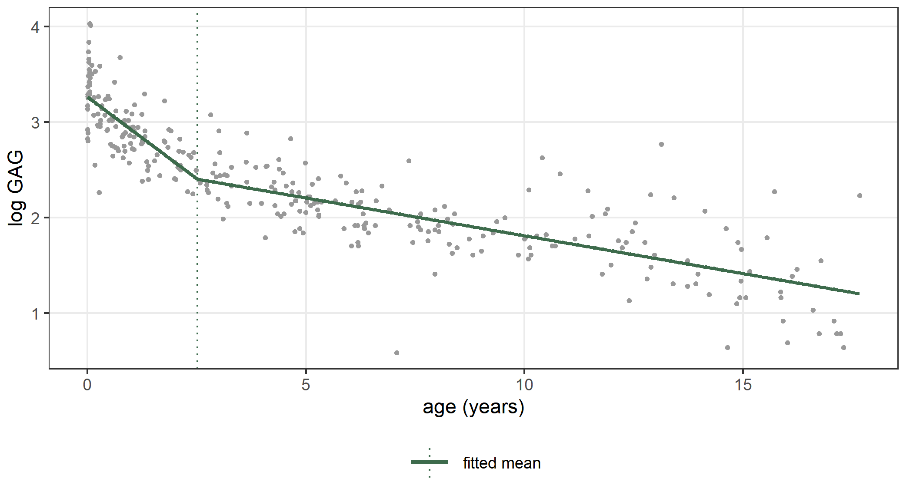
Is there a break-point?
The standard error of \(\psi\) says how precisely the position is located if there is a break-point. Whether there is one at all is a different question. Its null hypothesis is \(\gamma = 0\), and under it the position does not enter the model: \(\psi\) is a parameter that exists only under the alternative, so the usual tests of \(\gamma = 0\) have no fixed reference distribution (Davies 1987). Davies’ approach fixes the position at a value \(q\), computes the statistic of \(\gamma = 0\) for that \(q\), and reads the supremum of the resulting process over \(q\). The function statmod_breakpoint_test() uses Rao’s score statistic \[
S(q) = U_\gamma(q)^2 \, \big[K(q)^{-1}\big]_{\gamma\gamma},
\] where \(U_\gamma(q)\) is the score of \(\gamma\) in the model with the break-point at \(q\), evaluated at the fit of the model without the break-point, and \(K(q)\) is the information of that model. One fit of the model without the break-point serves every \(q\), so the process costs one gradient and one Hessian per position. For a change of slope \(S(q)\) is a smooth function of \(q\), and the p-value of \(M = \sup_q S(q)\) has the upper bound of Davies (1987), \[
P\Big(\sup_q S(q) > M\Big) \le P(\chi^2_1 > M) +
V \, \frac{e^{-M/2}}{\sqrt{2\pi}}, \qquad
V = \sum_j \big|S(q_{j+1})^{1/2} - S(q_j)^{1/2}\big| ,
\] with the sum over the grid of positions at which the process is read (ten by default). The test reads the score of whatever model carries the term, so it works for any family, in the equation of any parameter, and inside a parameter of nl().
test_gag <- statmod_breakpoint_test(fit_gag)
test_gag
#>
#> Davies' test for a break-point (score process, upper bound)
#>
#> data: seg in the equation of mu
#> sup S = 80.484, df = 1, p-value < 2.2e-16
#> alternative hypothesis: a change of slope
#> sample estimates:
#> psi
#> 2.809864
segmented::davies.test(lm_gag, seg.Z = ~ Age)
#>
#> Davies' test for a change in the slope
#>
#> data: formula = lGAG ~ Age , method = lm
#> model = gaussian , link = identity
#> segmented variable = Age
#> 'best' at = 1.9222, n.points = 9, p-value < 2.2e-16
#> alternative hypothesis: two.sidedBoth tests reject the model without a break-point. The function davies.test() of segmented reads the likelihood ratio on its own grid for a linear or generalized linear model; our score process gives the same conclusion. Figure 11.2 shows the process: it is largest near the age at which the slope changes most, and it is far above the quantiles of a \(\chi^2_1\) everywhere in the middle of the range.
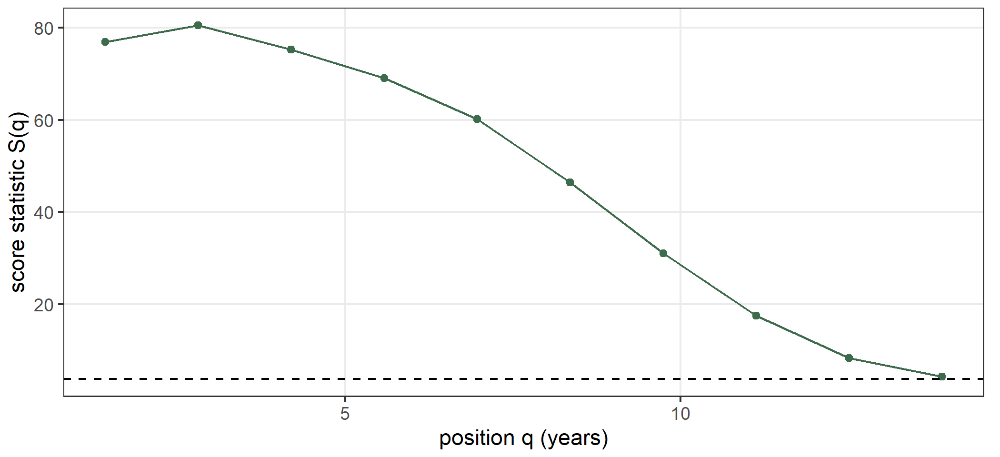
Several break-points
The argument npsi sets the number of break-points. With two of them the model has two changes of slope, \(\gamma_1\) at \(\psi_1\) and \(\gamma_2\) at \(\psi_2\):
fit_gag2 <- statmod(lGAG ~ seg(Age, npsi = 2), distrib = gaussian1_distrib(),
data = GAGurine)
summary(fit_gag2)
#> A statmod fit
#>
#> Call: statmod(formula = lGAG ~ seg(Age, npsi = 2), distrib = gaussian1_distrib(),
#> data = GAGurine)
#>
#> Distribution: gaussian1 Observations: 314
#>
#> === mu [identity link]
#>
#> Parametric terms
#> estimate se z p lower upper
#> (Intercept) 3.364 0.05638 59.68 < 1e-16 3.254 3.475
#>
#> seg(Age, npsi = 2) [5 coefficients, edf 5.00]
#> estimate se z p lower upper
#> beta -0.7661 0.2054 -3.729 0.0001919 -1.169 -0.3635
#> gamma1 0.588 0.2064 2.849 0.0043901 0.1834 0.9925
#> gamma2 0.1069 0.0213 5.021 5.151e-07 0.06519 0.1487
#> psi1 0.58 0.169 0.2487 0.9113
#> psi2 4.85 0.6752 3.527 6.173
#>
#> === sigma [log link]
#>
#> Parametric terms
#> estimate se z p lower upper
#> (Intercept) -1.198 0.04034 -29.69 < 1e-16 -1.277 -1.119
#>
#> 95% intervals, bayesian variance
#> conditional log-likelihood -66.302012 effective df 7.00
#> cAIC 146.604 cBIC 172.850
#> fitted in 6.83 s
#> inner max |grad|/se 0.05 min eigen 6.9e-05
#> outer max |grad|/se 4.2e-05 min eigen 1
s_gag2 <- segmented::segmented(lm_gag, seg.Z = ~ Age, npsi = 2)
s_gag2$psi
#> Initial Est. St.Err
#> psi1.Age NA 0.5583321 0.1832571
#> psi2.Age NA 4.8500108 0.6676271
rss_gag2 <- sum((GAGurine$lGAG - fitted(fit_gag2, what = "mu"))^2)
c(statmod = rss_gag2, segmented = sum(residuals(s_gag2)^2))
#> statmod segmented
#> 28.03973 28.04087The second break-point is the same in the two fits, at 4.85 years. The first one is at 0.58 years in our fit, which is one of the observed ages, and at 0.558 years in the fit of segmented. Our residual sum of squares is the smaller of the two. The mean has no derivative in \(\psi\) at an observed value of the covariate, and the minimum of the residual sum of squares can fall exactly there (Section 11.3 explains how the positions are found). Figure 11.3 compares the two models.
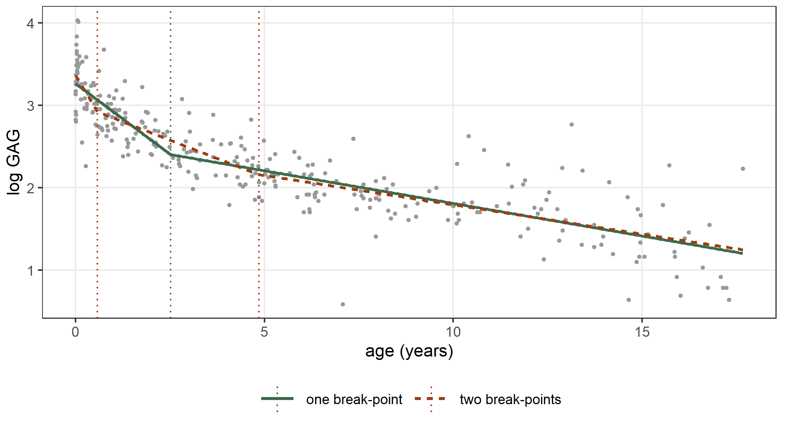
The choice between one and two break-points is a choice of the number of break-points, and Section 11.3.3 makes it by an information criterion.
A Poisson model
A break-point term goes into any family. The data frame down of the package segmented gives the number of babies born with Down syndrome (cases) and the number of births (births) for mothers of each age from 17 to 47. We model the rate of cases per birth on the logarithmic scale, with a change of slope at the age \(\psi\): \[
y_i \sim \mathrm{Poisson}(\mu_i), \qquad
\log\mu_i = \log b_i + \beta_0 + \beta_1 a_i + \gamma\,(a_i - \psi)_+ .
\]
data(down, package = "segmented")
fit_down <- statmod(cases ~ seg(age) + offset(log(births)),
distrib = poisson_distrib(), data = down)
summary(fit_down)
#> A statmod fit
#>
#> Call: statmod(formula = cases ~ seg(age) + offset(log(births)), distrib = poisson_distrib(),
#> data = down)
#>
#> Distribution: poisson Observations: 30
#>
#> === mu [log link]
#>
#> Parametric terms
#> estimate se z p lower upper
#> (Intercept) -6.784 0.4312 -15.73 < 1e-16 -7.629 -5.938
#>
#> seg(age) [3 coefficients, edf 3.00]
#> estimate se z p lower upper
#> beta -0.0134 0.01794 -0.7469 0.4551 -0.04856 0.02176
#> gamma1 0.2719 0.02314 11.75 <1e-16 0.2266 0.3173
#> psi1 31.05 0.7279 29.62 32.47
#>
#> 95% intervals, bayesian variance
#> conditional log-likelihood -91.377399 effective df 4.00
#> cAIC 190.755 cBIC 196.360
#> fitted in 60 ms
#> inner max |grad|/se 3.4e-15 min eigen 0.0034
glm_down <- glm(cases ~ age + offset(log(births)), family = poisson,
data = down)
s_down <- segmented::segmented(glm_down, seg.Z = ~ age)
s_down$psi
#> Initial Est. St.Err
#> psi1.age NA 31.04746 0.7279492
c(statmod = logLik(fit_down), segmented = logLik(s_down))
#> statmod segmented
#> -91.3774 -91.3774The two fits agree. Before the age of 31.0 years the rate changes by -1.3 per cent a year, which is almost constant, and after it the rate grows by 29.5 per cent a year. Figure 11.4 shows the observed rates per 1,000 births with the fitted rate, which we obtain from predict() with births = 1000 in newdata, so that the offset gives the rate per 1,000 births.
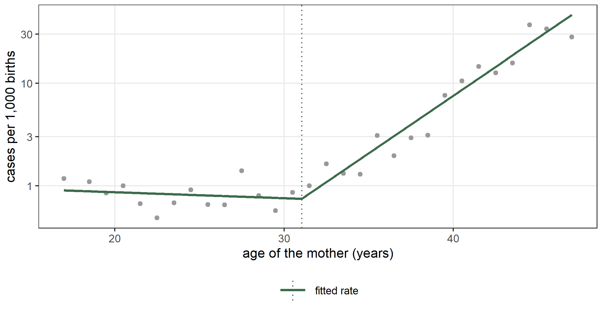
11.2 A change of level: jump() and jseg()
The series Nile gives the annual flow of the river Nile at Aswan, in units of \(10^8\) cubic meters, from 1871 to 1970 (Cobb 1978). The flow drops at the end of the nineteenth century. We model the mean as a step function of the year \(t\): \[
y_t \sim \mathrm{N}(\mu_t, \sigma), \qquad
\mu_t = \beta_0 + \delta\, \mathbb{1}(t > \psi) .
\]
nile <- data.frame(year = 1871:1970, flow = as.numeric(Nile))
fit_nile <- statmod(flow ~ jump(year), distrib = gaussian1_distrib(),
data = nile)
summary(fit_nile)
#> A statmod fit
#>
#> Call: statmod(formula = flow ~ jump(year), distrib = gaussian1_distrib(),
#> data = nile)
#>
#> Distribution: gaussian1 Observations: 100
#>
#> === mu [identity link]
#>
#> Parametric terms
#> estimate se z p lower upper
#> (Intercept) 1098 24.13 45.5 < 1e-16 1050 1145
#>
#> jump(year) [2 coefficients, edf 2.00]
#> estimate se z p lower upper
#> delta1 -247.8 28.44 -8.714 < 1e-16 -303.5 -192
#> psi1 1898
#>
#> === sigma [log link]
#>
#> Parametric terms
#> estimate se z p lower upper
#> (Intercept) 4.849 0.07143 67.89 < 1e-16 4.709 4.989
#>
#> 95% intervals, bayesian variance
#> conditional log-likelihood -625.841663 effective df 4.00
#> cAIC 1259.683 cBIC 1270.104
#> fitted in 670 ms
#> inner max |grad|/se 3.3e-15 min eigen 0.15
#> outer max |grad|/se 1.1e-07 min eigen 1
#> 1 note: print(summary(fit), notes = TRUE)The mean is now a step function of \(\psi\): it does not change while \(\psi\) moves between two consecutive years. So the log-likelihood has no curvature in \(\psi\), and \(\psi\) has no standard error. The position is the minimum of the residual sum of squares over the intervals between consecutive years (Section 11.3), and it is held there while the other coefficients are fitted. With the position held, the model is linear in \(\beta_0\) and \(\delta\), and their standard errors are those of lm() with the indicator written as a column. They are conditional on the position. The position counts one degree of freedom.
The function stepmented() of segmented fits the same model:
s_nile <- segmented::stepmented(lm(flow ~ 1, data = nile), ~ year)
s_nile$psi
#> Est. St.Err
#> psi1.year 1898.885 NA
rss_nile <- sum((nile$flow - fitted(fit_nile, what = "mu"))^2)
c(statmod = rss_nile, stepmented = sum(residuals(s_nile)^2))
#> statmod stepmented
#> 1597457 1597457Both fits put the step between 1898 and 1899, and they have the same residual sum of squares. We compare the residual sums of squares and not the log-likelihoods, because our \(\sigma\) is the REML estimate \(\sqrt{\mathrm{RSS}/(n-3)}\) and stepmented() reports the maximum likelihood one. The mean flow is 1,098 before the step and 850 after it, a drop of 248 with a standard error of 28.4. Figure 11.5 shows the series with the fitted step.
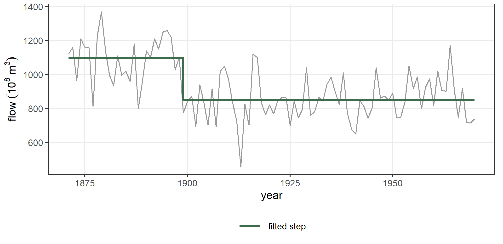
A bootstrap for the position
The parametric bootstrap gives the uncertainty of the position of a step (Efron and Tibshirani 1993). We draw new data sets from the fitted model with simulate(), fit the model again to each of them, and look at the spread of the new positions:
set.seed(1)
sims <- simulate(fit_nile, nsim = 100)
psi_star <- numeric(100)
for (k in 1:100) {
nile_k <- nile
nile_k$flow <- sims[, k]
fit_k <- statmod(flow ~ jump(year), distrib = gaussian1_distrib(),
data = nile_k)
psi_star[k] <- coef(fit_k)$mu[["jump.psi1"]]
}
quantile(psi_star, probs = c(0.025, 0.975))
#> 2.5% 97.5%
#> 1895.238 1899.809
mean(floor(psi_star) == 1898)
#> [1] 0.68In 68 per cent of the simulated data sets the step falls between 1898 and 1899, as in the original fit, and 95 per cent of the positions lie between 1895.2 and 1899.8.
Is there a step?
The test of Section 11.1 applies to a change of level too, with one difference. The score process of a step is constant between consecutive years and jumps at each of them, and Davies’ bound, which adds up those jumps, is then too wide to be useful. statmod_breakpoint_test() therefore reads the supremum over every interval between consecutive years, and estimates its distribution under the null hypothesis by a parametric bootstrap: it draws new responses from the fit without a step, fits that model again to each, and computes the supremum of each new process. The p-value is the share of bootstrap suprema at least as large as the observed one, counting the observed one. We use 99 replicates:
test_nile <- statmod_breakpoint_test(fit_nile, n_boot = 99, seed = 1)
test_nile
#>
#> Test for a break-point (score process, parametric bootstrap, 99
#> replicates)
#>
#> data: jump in the equation of mu
#> sup S = 43.655, df = 1, p-value = 0.01
#> alternative hypothesis: a change of level
#> sample estimates:
#> psi
#> 1898.5The p-value is 0.01, the smallest that 99 replicates can give: none of the bootstrap suprema reaches the observed one.
A change of level in a Poisson model
A change of level goes into any family, as a change of slope does. The data frame coal of the package boot gives the dates of the explosions in British coal mines that killed ten or more people, from 1851 to 1962 (Jarrett 1979; Davison and Hinkley 1997). We count the disasters of each year and model the count as a Poisson variable whose mean drops once: \[
y_t \sim \mathrm{Poisson}(\mu_t), \qquad
\log\mu_t = \beta_0 + \delta\,\mathbb{1}(t > \psi) .
\]
data(coal, package = "boot")
coal_y <- data.frame(year = 1851:1962)
coal_y$count <- as.numeric(table(factor(floor(coal$date), levels = 1851:1962)))
fit_coal <- statmod(count ~ jump(year), distrib = poisson_distrib(),
data = coal_y)
summary(fit_coal)
#> A statmod fit
#>
#> Call: statmod(formula = count ~ jump(year), distrib = poisson_distrib(),
#> data = coal_y)
#>
#> Distribution: poisson Observations: 112
#>
#> === mu [log link]
#>
#> Parametric terms
#> estimate se z p lower upper
#> (Intercept) 1.131 0.08874 12.74 < 1e-16 0.9567 1.305
#>
#> jump(year) [2 coefficients, edf 2.00]
#> estimate se z p lower upper
#> delta1 -1.234 0.1533 -8.053 8.106e-16 -1.535 -0.934
#> psi1 1892
#>
#> 95% intervals, bayesian variance
#> conditional log-likelihood -168.575997 effective df 3.00
#> cAIC 343.152 cBIC 351.307
#> fitted in 1.75 s
#> inner max |grad|/se 4.8e-16 min eigen 0.42
#> 1 note: print(summary(fit), notes = TRUE)
s_coal <- segmented::stepmented(glm(count ~ 1, family = poisson, data = coal_y),
~ year)
s_coal$psi
#> Est. St.Err
#> psi1.year 1891.118 NA
c(statmod = logLik(fit_coal), stepmented = logLik(s_coal))
#> statmod stepmented
#> -168.576 -168.576The two fits have the same log-likelihood, and both put the change between 1891 and 1892. The expected number of disasters falls from 3.10 a year to 0.90, a ratio of 0.29. Figure 11.6 shows the counts with the fitted mean.
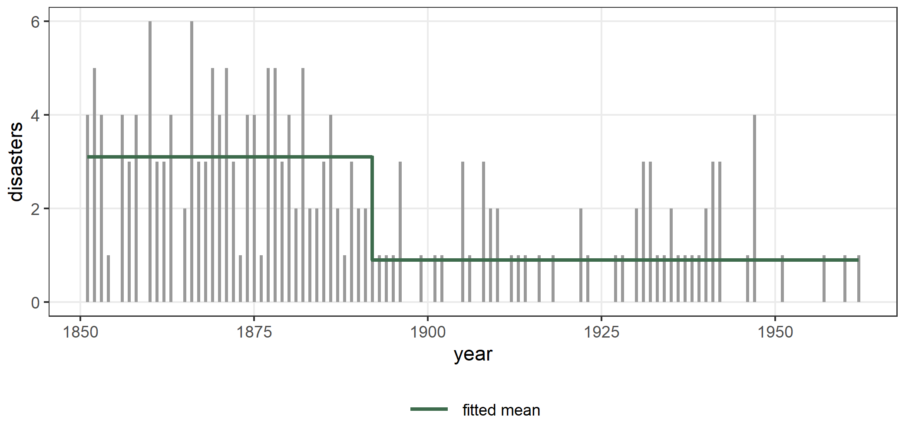
A change of level and of slope
The term jseg() changes both the level and the slope at the same position: \[
\mu_i = \beta_0 + \beta_1 x_i + \gamma\,(x_i - \psi)_+ + \delta\,\mathbb{1}(x_i > \psi) .
\] We simulate 200 observations from this model with \(\psi = 6\), a jump of 1.5 and a change of slope of \(-0.6\), and we fit the three terms:
set.seed(11)
x <- sort(runif(200, 0, 10))
y <- 1 + 0.3 * x + ifelse(x > 6, 1.5 - 0.6 * (x - 6), 0) +
rnorm(200, sd = 0.5)
sim <- data.frame(x = x, y = y)
fit_jseg <- statmod(y ~ jseg(x), distrib = gaussian1_distrib(), data = sim)
summary(fit_jseg)
#> A statmod fit
#>
#> Call: statmod(formula = y ~ jseg(x), distrib = gaussian1_distrib(),
#> data = sim)
#>
#> Distribution: gaussian1 Observations: 200
#>
#> === mu [identity link]
#>
#> Parametric terms
#> estimate se z p lower upper
#> (Intercept) 1.065 0.08752 12.17 < 1e-16 0.8939 1.237
#>
#> jseg(x) [4 coefficients, edf 4.00]
#> estimate se z p lower upper
#> beta 0.2903 0.0254 11.43 < 1e-16 0.2405 0.34
#> gamma1 -0.6296 0.06293 -10.01 < 1e-16 -0.753 -0.5063
#> delta1 1.436 0.1435 10 < 1e-16 1.154 1.717
#> psi1 6.197
#>
#> === sigma [log link]
#>
#> Parametric terms
#> estimate se z p lower upper
#> (Intercept) -0.7195 0.05051 -14.24 < 1e-16 -0.8185 -0.6205
#>
#> 95% intervals, bayesian variance
#> conditional log-likelihood -137.895410 effective df 6.00
#> cAIC 287.791 cBIC 307.581
#> fitted in 410 ms
#> inner max |grad|/se 3.1e-15 min eigen 0.043
#> outer max |grad|/se 2.5e-15 min eigen 1
#> 1 note: print(summary(fit), notes = TRUE)The summary gives the slope beta, the change of slope gamma1, the change of level delta1 and the position psi1, which, as for jump(), has no standard error. We also fit the model with a change of slope only and the model with a change of level only. In y ~ x + jump(x) the formula writes x for the linear effect, because jump() carries no slope of its own.
fit_seg0 <- statmod(y ~ seg(x), distrib = gaussian1_distrib(), data = sim)
summary(fit_seg0)
#> A statmod fit
#>
#> Call: statmod(formula = y ~ seg(x), distrib = gaussian1_distrib(),
#> data = sim)
#>
#> Distribution: gaussian1 Observations: 200
#>
#> === mu [identity link]
#>
#> Parametric terms
#> estimate se z p lower upper
#> (Intercept) 0.7614 0.09278 8.207 2.268e-16 0.5796 0.9432
#>
#> seg(x) [3 coefficients, edf 3.00]
#> estimate se z p lower upper
#> beta 0.4247 0.02286 18.58 < 1e-16 0.3799 0.4695
#> gamma1 -0.6229 0.1116 -5.583 2.369e-08 -0.8416 -0.4042
#> psi1 7.075 0.3091 6.47 7.681
#>
#> === sigma [log link]
#>
#> Parametric terms
#> estimate se z p lower upper
#> (Intercept) -0.5621 0.05051 -11.13 < 1e-16 -0.6611 -0.4631
#>
#> 95% intervals, bayesian variance
#> conditional log-likelihood -169.371518 effective df 5.00
#> cAIC 348.743 cBIC 365.235
#> fitted in 180 ms
#> inner max |grad|/se 2.6e-15 min eigen 0.069
#> outer max |grad|/se 2.1e-11 min eigen 1
fit_jump0 <- statmod(y ~ x + jump(x), distrib = gaussian1_distrib(), data = sim)
summary(fit_jump0)
#> A statmod fit
#>
#> Call: statmod(formula = y ~ x + jump(x), distrib = gaussian1_distrib(),
#> data = sim)
#>
#> Distribution: gaussian1 Observations: 200
#>
#> === mu [identity link]
#>
#> Parametric terms
#> estimate se z p lower upper
#> (Intercept) 1.385 0.1001 13.84 < 1e-16 1.189 1.581
#> x 0.1826 0.02862 6.382 1.752e-10 0.1265 0.2387
#>
#> jump(x) [2 coefficients, edf 2.00]
#> estimate se z p lower upper
#> delta1 0.9346 0.1637 5.709 1.138e-08 0.6137 1.255
#> psi1 6.087
#>
#> === sigma [log link]
#>
#> Parametric terms
#> estimate se z p lower upper
#> (Intercept) -0.5198 0.05038 -10.32 < 1e-16 -0.6185 -0.4211
#>
#> 95% intervals, bayesian variance
#> conditional log-likelihood -178.326832 effective df 5.00
#> cAIC 366.654 cBIC 383.145
#> fitted in 1.99 s
#> inner max |grad|/se 4.4e-15 min eigen 0.048
#> outer max |grad|/se 1e-15 min eigen 1
#> 1 note: print(summary(fit), notes = TRUE)
c(jseg = BIC(fit_jseg), seg = BIC(fit_seg0), jump = BIC(fit_jump0))
#> jseg seg jump
#> 307.5807 365.2346 383.1453The BIC is smallest for jseg(), whose position is 6.20 against the true 6. Figure 11.7 shows the three fits. The model with a change of slope only joins the two lines at the break-point and so misses the jump; the model with a change of level only keeps one slope on both sides.
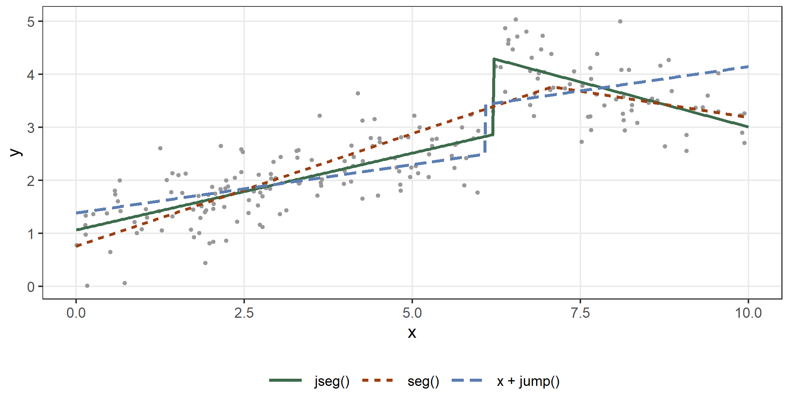
A change of level and of slope in a Gamma model
For a positive response with a variance that grows with the mean we use the Gamma family with a logarithmic link. We simulate 300 observations whose mean has a change of level of 0.8 and a change of slope of \(-0.15\) at \(x = 4\) on the log scale: \[ y_i \sim \mathrm{Gamma}(\mu_i, \phi), \qquad \log\mu_i = \beta_0 + \beta_1 x_i + \gamma\,(x_i - \psi)_+ + \delta\,\mathbb{1}(x_i > \psi) . \]
set.seed(4)
x_g <- runif(300, 0, 10)
mu_g <- exp(0.5 + 0.1 * x_g + ifelse(x_g > 4, 0.8 - 0.15 * (x_g - 4), 0))
sim_g <- data.frame(x = x_g, y = rgamma(300, shape = 4, rate = 4 / mu_g))
fit_gj <- statmod(y ~ jseg(x), distrib = gamma1_distrib(), data = sim_g)
summary(fit_gj)
#> A statmod fit
#>
#> Call: statmod(formula = y ~ jseg(x), distrib = gamma1_distrib(), data = sim_g)
#>
#> Distribution: gamma1 Observations: 300
#>
#> === mu [log link]
#>
#> Parametric terms
#> estimate se z p lower upper
#> (Intercept) 0.5598 0.09394 5.959 2.535e-09 0.3757 0.7439
#>
#> jseg(x) [4 coefficients, edf 4.00]
#> estimate se z p lower upper
#> beta 0.09366 0.04134 2.265 0.02348 0.01263 0.1747
#> gamma1 -0.1527 0.04665 -3.274 0.00106 -0.2442 -0.0613
#> delta1 0.778 0.1251 6.219 4.994e-10 0.5328 1.023
#> psi1 4.092
#>
#> === phi [log link]
#>
#> Parametric terms
#> estimate se z p lower upper
#> (Intercept) -1.329 0.0788 -16.87 < 1e-16 -1.484 -1.175
#>
#> 95% intervals, bayesian variance
#> conditional log-likelihood -562.625814 effective df 6.00
#> cAIC 1137.252 cBIC 1159.474
#> fitted in 1.89 s
#> inner max |grad|/se 9.1e-07 min eigen 0.011
#> outer max |grad|/se 2.9e-08 min eigen 1
#> 1 note: print(summary(fit), notes = TRUE)
fit_gs <- statmod(y ~ seg(x), distrib = gamma1_distrib(), data = sim_g)
summary(fit_gs)
#> A statmod fit
#>
#> Call: statmod(formula = y ~ seg(x), distrib = gamma1_distrib(), data = sim_g)
#>
#> Distribution: gamma1 Observations: 300
#>
#> === mu [log link]
#>
#> Parametric terms
#> estimate se z p lower upper
#> (Intercept) 0.4206 0.07376 5.702 1.186e-08 0.276 0.5652
#>
#> seg(x) [3 coefficients, edf 3.00]
#> estimate se z p lower upper
#> beta 0.2057 0.0192 10.71 < 1e-16 0.1681 0.2433
#> gamma1 -0.3924 0.06158 -6.373 1.857e-10 -0.5131 -0.2717
#> psi1 6.748 0.3526 6.057 7.439
#>
#> === phi [log link]
#>
#> Parametric terms
#> estimate se z p lower upper
#> (Intercept) -1.277 0.07863 -16.24 < 1e-16 -1.431 -1.123
#>
#> 95% intervals, bayesian variance
#> conditional log-likelihood -571.177618 effective df 5.00
#> cAIC 1152.355 cBIC 1170.874
#> fitted in 420 ms
#> inner max |grad|/se 3.5e-15 min eigen 0.05
#> outer max |grad|/se 1.2e-11 min eigen 1
c(jseg = BIC(fit_gj), seg = BIC(fit_gs))
#> jseg seg
#> 1159.474 1170.874The estimates are close to the values of the simulation: the position is 4.09 against 4, the change of level 0.78 against 0.8 and the change of slope -0.153 against \(-0.15\). The model without the change of level has the larger BIC. As in the gaussian case, the position has no standard error, and the other coefficients have standard errors conditional on it. Figure 11.8 shows the two fits.
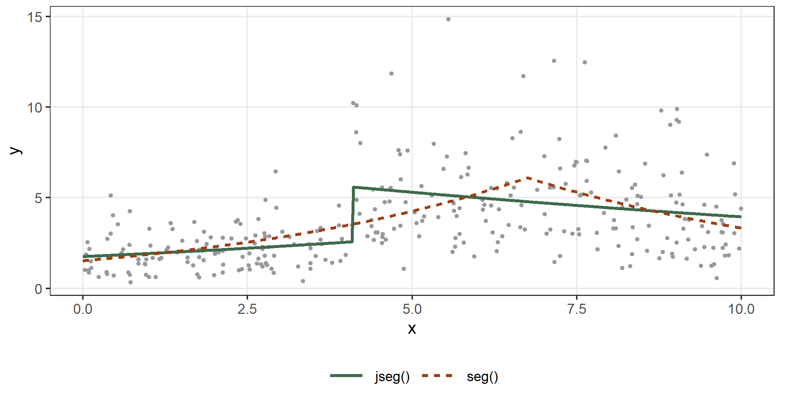
11.3 Locating the break-points
The position of a break-point enters the model through the columns \((x - \psi)_+\) and \(\mathbb{1}(x > \psi)\), which are not differentiable in \(\psi\) at the observed values of \(x\). statmod() finds the positions in two stages. It first runs an iteration that moves the positions together with the other coefficients: the linearization of Muggeo (2003) for a change of slope, and the working construction of Fasola, Muggeo, and Küchenhoff (2018) for a change of level. It then polishes the positions on the exact profile of the objective, which this section describes, and refits the other coefficients there.
The profile over every interval
Hold every position but one, \(\psi_k = q\), and write \(F\) for the columns that do not depend on \(q\): the intercept, the covariate if the term carries a slope, the columns of the other break-points and the columns of the other terms. Write \(A(q)\) for the columns that do depend on \(q\): \((x - q)_+\) for seg(), \(\mathbb{1}(x > q)\) for jump(), and both for jseg(). By the theorem of Frisch, Waugh and Lovell, the residual sum of squares of the response on \(F\) and \(A(q)\) is the residual sum of squares on \(F\) alone, \(\mathrm{RSS}_F\), less what \(A(q)\) explains of the residuals \(r = M_F y\): \[
\mathrm{RSS}(q) = \mathrm{RSS}_F - c(q)' S(q)^{-1} c(q), \qquad
c(q) = A(q)' M_F\, y, \qquad S(q) = A(q)' M_F\, A(q),
\] where \(M_F = I - F(F'F)^{-1}F'\). The profile \(\mathrm{RSS}(q)\) is what the polish minimizes.
For a change of level, \(A(q)\) changes only when \(q\) crosses an observed value of \(x\). So \(\mathrm{RSS}(q)\) is constant between consecutive observed values, and its minimum over all \(q\) is found by evaluating it once in each interval. Every cross product in \(c(q)\) and \(S(q)\) is a sum over the observations above \(q\), of a fixed quantity or of a fixed quantity minus \(q\) times another. After sorting the observations once, these sums are cumulative sums read from the top, so all the intervals together cost \(O(np^2)\) operations, \(p\) being the number of columns of \(F\), rather than one regression each. The position is placed at the midpoint of the best interval.
For a change of slope the profile is not constant inside an interval, but it has a simple form there. Between the consecutive observed values \(u_j < u_{j+1}\) the column is \((x - q)\, s\) with \(s = \mathbb{1}(x > u_j)\) fixed, so with \(t = x\, s\) it is \(t - q\, s\), and \[ \mathrm{RSS}(q) = \mathrm{RSS}_F - \frac{(c_t - q\, c_s)^2}{a_{tt} - 2q\, a_{ts} + q^2 a_{ss}} , \] where \(c_t = t' M_F y\), \(c_s = s' M_F y\) and the \(a\) are the cross products of \(t\) and \(s\) after \(M_F\). The ratio has one stationary point, \(q^* = -b/g\), where \(g\) and \(b\) are the coefficients of \(t\) and \(s\) in the regression of \(r\) on the two columns. The minimum over the interval is at \(q^*\) when \(q^*\) falls inside it, and at one of its ends otherwise, which is an observed value. This is why the first position of the GAG model with two break-points is exactly one of the observed ages.
With several break-points the polish minimizes the profile over one position at a time, with the others held, and cycles through the positions until none of them moves. Each step searches every interval, so a position can move from one local minimum to another however far apart they are.
In a model whose objective is not a residual sum of squares (another family, or the equation of a parameter other than a gaussian mean), the same profile is computed on the working response of a scoring step, \[ z_i = \eta_i + \frac{\partial \ell_i / \partial \eta_i}{h_i}, \qquad h_i = -\mathbb{E}\Big(\frac{\partial^2 \ell_i}{\partial \eta_i^2}\Big), \] with weights \(h_i\), which is the quadratic approximation of the log-likelihood around the current fit. Since the approximation is not the objective, a polished position is kept only when the refit there improves the objective, and the five deepest local minima of the working profile are also refitted and compared on the objective itself.
When the position has covariates, \(\psi_i = w_i' p\), the polish moves the coefficients \(p\) along a line, \(p + \lambda v\). The position of observation \(i\) crosses \(x_i\) at \(\lambda_i = (x_i - \psi_i)/(w_i' v)\), so the profile is again evaluated once between consecutive crossings. With psi ~ 0 + g the lines move the position of one group at a time, which is a search over every interval of that group. With a continuous covariate in the formula of the position, the lines follow a fixed set of directions, and the result is the best point along those lines, not a guaranteed global minimum.
Starting values
The data frame globTempAnom of the package segmented gives the yearly anomaly of the global temperature from 1850 to 2023. We fit two changes of slope with the default starting values, and from \(\psi = (1880, 1950)\) without the bootstrap restarts of Muggeo (2003) (n_boot = 0):
data(globTempAnom, package = "segmented")
fit_glob <- statmod(Anomaly ~ seg(Year, npsi = 2),
distrib = gaussian1_distrib(), data = globTempAnom)
summary(fit_glob)
#> A statmod fit
#>
#> Call: statmod(formula = Anomaly ~ seg(Year, npsi = 2), distrib = gaussian1_distrib(),
#> data = globTempAnom)
#>
#> Distribution: gaussian1 Observations: 174
#>
#> === mu [identity link]
#>
#> Parametric terms
#> estimate se z p lower upper
#> (Intercept) 3.837 1.4 2.74 0.00614 1.093 6.582
#>
#> seg(Year, npsi = 2) [5 coefficients, edf 5.00]
#> estimate se z p lower upper
#> beta -0.002144 0.0007448 -2.879 0.003993 -0.003604 -0.0006843
#> gamma1 0.00766 0.0009963 7.688 1.491e-14 0.005707 0.009613
#> gamma2 0.01295 0.001285 10.08 < 1e-16 0.01043 0.01547
#> psi1 1910 4.746 1901 1919
#> psi2 1976 3.025 1970 1982
#>
#> === sigma [log link]
#>
#> Parametric terms
#> estimate se z p lower upper
#> (Intercept) -2.279 0.05464 -41.7 < 1e-16 -2.386 -2.172
#>
#> 95% intervals, bayesian variance
#> conditional log-likelihood 152.611858 effective df 7.00
#> cAIC -291.224 cBIC -269.110
#> fitted in 6.11 s
#> inner max |grad|/se 0.12 min eigen 1.5e-05
#> outer max |grad|/se 1.4e-06 min eigen 1
fit_glob_0 <- statmod(Anomaly ~ seg(Year, npsi = 2, psi = c(1880, 1950),
n_boot = 0),
distrib = gaussian1_distrib(), data = globTempAnom)
rss <- function(fit) {
sum((globTempAnom$Anomaly - fitted(fit, what = "mu"))^2)
}
lm_glob <- lm(Anomaly ~ Year, data = globTempAnom)
s_glob <- segmented::segmented(lm_glob, seg.Z = ~ Year, npsi = 2)
rbind(default = coef(fit_glob)$mu[c("seg.psi1", "seg.psi2")],
start = coef(fit_glob_0)$mu[c("seg.psi1", "seg.psi2")],
segmented = s_glob$psi[, "Est."])
#> seg.psi1 seg.psi2
#> default 1910 1976.288
#> start 1910 1976.288
#> segmented 1910 1976.318
c(default = rss(fit_glob), start = rss(fit_glob_0),
segmented = sum(residuals(s_glob)^2))
#> default start segmented
#> 1.761916 1.761916 1.761917The two fits reach the same positions as segmented. Figure 11.9 shows why the start matters for the iteration and not for the polish: with the first position held at 1910, the profile in the second position has two minima, and an iteration that starts from 1950 can stop at the one near 2014, where the second change of slope rests on a handful of years. The polish evaluates every interval and moves the position to the deeper minimum.
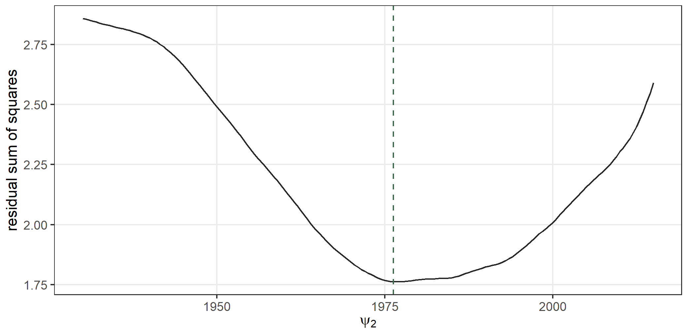
The function seg_start() returns the starting positions that statmod() computes by default, so they can be inspected before a fit:
seg_start(seg(Year, npsi = 2), data = globTempAnom,
y = globTempAnom$Anomaly)@spec$psi
#> [1] 1910.55 1979.75The number of break-points
The number of break-points is a choice between models, and we make it with an information criterion. Each position counts one degree of freedom, as does each change of slope. We fit from none to five changes of slope to the temperature anomalies:
fits_glob <- list(statmod(Anomaly ~ Year, distrib = gaussian1_distrib(),
data = globTempAnom))
for (k in 1:5) {
fits_glob[[k + 1]] <- statmod(Anomaly ~ seg(Year, npsi = k),
distrib = gaussian1_distrib(),
data = globTempAnom)
}
tab_npsi <- data.frame(
npsi = 0:5,
rss = vapply(fits_glob, rss, numeric(1)),
edf = vapply(fits_glob, function(f) sum(f@edf$edf), numeric(1)),
AIC = vapply(fits_glob, AIC, numeric(1)),
BIC = vapply(fits_glob, BIC, numeric(1)))
tab_npsi
#> npsi rss edf AIC BIC
#> 1 0 7.304909 3 -51.86632 -42.38915
#> 2 1 2.388142 5 -242.36857 -226.57330
#> 3 2 1.761916 7 -291.22372 -269.11033
#> 4 3 1.490909 9 -316.20030 -287.76880
#> 5 4 1.388930 11 -324.39065 -289.64104
#> 6 5 1.330477 13 -327.74202 -286.67430The BIC is smallest with 4 break-points, at 1900, 1909, 1942, 1971, and the AIC, which penalizes each degree of freedom less, keeps adding break-points up to 5. The function selgmented() of segmented makes the choice by the BIC with its own fits:
s_sel <- segmented::selgmented(lm_glob, seg.Z = ~ Year, type = "bic",
Kmax = 5, msg = FALSE)
s_sel$psi
#> Initial Est. St.Err
#> psi1.Year NA 1918.269 2.667810
#> psi2.Year NA 1941.002 3.202238
#> psi3.Year NA 1970.641 2.138470
s_glob4 <- segmented::segmented(lm_glob, seg.Z = ~ Year, npsi = 4)
c(statmod = rss(fits_glob[[5]]), segmented = sum(residuals(s_glob4)^2))
#> statmod segmented
#> 1.388930 1.628145It chooses 3 break-points, because its fit with four stops at a local minimum whose residual sum of squares is larger than ours, as the last line shows. The search over every interval of Section 11.3 matters most where the number of break-points grows, because the profile of each position then has more local minima. Figure 11.10 shows the fit chosen by the BIC.
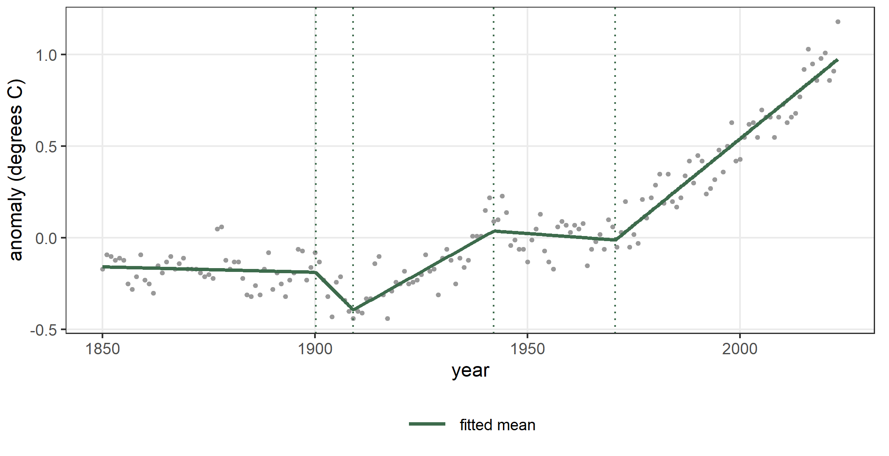
11.4 Covariates on the coefficients
Every coefficient of a break-point term can depend on covariates through a formula with the coefficient on the left. The argument by = ~ 0 + g gives every coefficient one value for each level of the factor g, and psi ~ 0 + g gives only the position one value per level. The data frame plant of the package segmented gives a measurement y of three plants (group) at several times time. We fit a model with one change of slope for each plant, and a model in which the three plants share the slopes but not the position:
data(plant, package = "segmented")
fit_by <- statmod(y ~ group + seg(time, by = ~ 0 + group),
distrib = gaussian1_distrib(), data = plant)
summary(fit_by)
#> A statmod fit
#>
#> Call: statmod(formula = y ~ group + seg(time, by = ~0 + group), distrib = gaussian1_distrib(),
#> data = plant)
#>
#> Distribution: gaussian1 Observations: 103
#>
#> === mu [identity link]
#>
#> Parametric terms
#> estimate se z p lower upper
#> (Intercept) 0.1179 0.03241 3.638 0.0002751 0.05437 0.1814
#> groupRKW -0.3268 0.04166 -7.843 4.389e-15 -0.4084 -0.2451
#> groupRWC 0.1052 0.05102 2.061 0.0392922 0.005161 0.2052
#>
#> seg(time, by = ~0 + group) [9 coefficients, edf 9.00]
#> estimate se z p lower upper
#>
#> beta ~ 0 + group
#> groupRKV 0.002233 0.0001185 18.84 < 1e-16 0.002 0.002465
#> groupRKW 0.002262 8.205e-05 27.57 < 1e-16 0.002101 0.002423
#> groupRWC 0.002168 0.0001661 13.05 < 1e-16 0.001842 0.002494
#>
#> gamma1 ~ 0 + group
#> groupRKV -0.002597 0.0001522 -17.06 < 1e-16 -0.002895 -0.002298
#> groupRKW -0.001879 0.0001381 -13.6 < 1e-16 -0.00215 -0.001609
#> groupRWC -0.003426 0.000178 -19.25 < 1e-16 -0.003775 -0.003077
#>
#> psi1 ~ 0 + group
#> groupRKV 383.8 9.625 39.87 < 1e-16 364.9 402.6
#> groupRKW 469.1 13.84 33.88 < 1e-16 442 496.2
#> groupRWC 331.4 7.362 45.01 < 1e-16 317 345.8
#>
#> === sigma [log link]
#>
#> Parametric terms
#> estimate se z p lower upper
#> (Intercept) -3.299 0.07464 -44.2 < 1e-16 -3.446 -3.153
#>
#> 95% intervals, bayesian variance
#> conditional log-likelihood 199.701489 effective df 13.00
#> cAIC -373.403 cBIC -339.152
#> fitted in 1.95 s
#> inner max |grad|/se 0.23 min eigen 0.0041
#> outer max |grad|/se 7.7e-06 min eigen 1
fit_psi <- statmod(y ~ group + seg(time, psi ~ 0 + group),
distrib = gaussian1_distrib(), data = plant)
summary(fit_psi)
#> A statmod fit
#>
#> Call: statmod(formula = y ~ group + seg(time, psi ~ 0 + group), distrib = gaussian1_distrib(),
#> data = plant)
#>
#> Distribution: gaussian1 Observations: 103
#>
#> === mu [identity link]
#>
#> Parametric terms
#> estimate se z p lower upper
#> (Intercept) 0.1877 0.02181 8.605 < 1e-16 0.1449 0.2304
#> groupRKW -0.3094 0.0161 -19.21 < 1e-16 -0.3409 -0.2778
#> groupRWC 0.08667 0.02075 4.176 2.966e-05 0.04599 0.1274
#>
#> seg(time, psi ~ 0 + group) [5 coefficients, edf 5.00]
#> estimate se z p lower upper
#> beta 0.001923 6.22e-05 30.92 < 1e-16 0.001801 0.002045
#> gamma1 -0.003007 9.839e-05 -30.56 < 1e-16 -0.0032 -0.002814
#>
#> psi1 ~ 0 + group
#> groupRKV 449.9 7.791 57.75 < 1e-16 434.6 465.2
#> groupRKW 599.4 8.232 72.81 < 1e-16 583.3 615.5
#> groupRWC 330.7 8.367 39.52 < 1e-16 314.3 347.1
#>
#> === sigma [log link]
#>
#> Parametric terms
#> estimate se z p lower upper
#> (Intercept) -2.963 0.07255 -40.84 < 1e-16 -3.105 -2.82
#>
#> 95% intervals, bayesian variance
#> conditional log-likelihood 162.994387 effective df 9.00
#> cAIC -307.989 cBIC -284.276
#> fitted in 570 ms
#> inner max |grad|/se 2e-14 min eigen 0.019
#> outer max |grad|/se 1.4e-10 min eigen 1In the summary each developed coefficient has a compartment headed by its formula, with one value per level of group. The function segreg() of segmented fits the first model with the term seg(time, by = group) of its own formula language. Our seg() has the same name, so we evaluate segmented’s inside a local environment:
s_plant <- local({
seg <- segmented::seg
segmented::segreg(y ~ group + seg(time, by = group), data = plant)
})
s_plant$psi
#> Initial Est. St.Err
#> psi1.time:groupRKV NA 383.8510 9.623248
#> psi1.time:groupRKW NA 469.3473 13.831825
#> psi1.time:groupRWC NA 331.4003 7.360919
c(statmod = sum((plant$y - fitted(fit_by, what = "mu"))^2),
segreg = sum(residuals(s_plant)^2))
#> statmod segreg
#> 0.1239023 0.1239029The two fits have the same positions and the same residual sum of squares. Figure 11.11 shows the data of the three plants with the two fits.
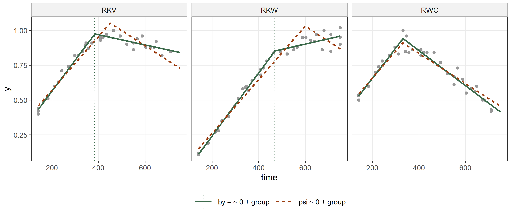
The second model is nested in the first: it has one slope and one change of slope where the first has three of each, so it has four coefficients fewer. We compare the two with the likelihood ratio test:
l0 <- logLik(fit_psi)
l1 <- logLik(fit_by)
lr <- 2 * (as.numeric(l1) - as.numeric(l0))
lr
#> [1] 73.4142
pchisq(lr, df = 4, lower.tail = FALSE)
#> [1] 4.312525e-15The common slopes are rejected. The test treats the positions as known in both models, which is the usual practice for nested break-point models with the same number of break-points (Muggeo 2003). The same formulas work in jump() and jseg(), whose positions are then located as Section 11.3 describes.
11.5 A random break-point
In a panel each subject can have its own break-point. The model with a random position (Muggeo et al. 2014) is \[
\mu_{ij} = \beta_0 + b_i + \beta_1 t_{ij} + \gamma\,(t_{ij} - \psi_i)_+ ,
\qquad \psi_i = \psi + u_i, \quad u_i \sim \mathrm{N}(0, \tau),
\] with a random intercept \(b_i \sim \mathrm{N}(0, \sigma_b)\). We simulate 20 subjects observed at 15 times, with \(\psi = 5\) and \(\tau = 0.8\), and write the random position as a formula on psi:
set.seed(3)
id <- factor(rep(1:20, each = 15))
t <- rep(seq(0, 10, length.out = 15), 20)
psi_i <- 5 + rnorm(20, sd = 0.8)
b0 <- 2 + rnorm(20, sd = 0.5)
y <- b0[id] + 0.8 * t - 1.2 * pmax(t - psi_i[id], 0) + rnorm(300, sd = 0.4)
panel <- data.frame(id = id, t = t, y = y)
fit_pan <- statmod(y ~ random(~ 1 | id) + seg(t, psi ~ random(~ 1 | id)),
distrib = gaussian1_distrib(), data = panel)
summary(fit_pan)
#> A statmod fit
#>
#> Call: statmod(formula = y ~ random(~1 | id) + seg(t, psi ~ random(~1 |
#> id)), distrib = gaussian1_distrib(), data = panel)
#>
#> Distribution: gaussian1 Observations: 300
#>
#> === mu [identity link]
#>
#> Parametric terms
#> estimate se z p lower upper
#> (Intercept) 2.019 0.1167 17.31 < 1e-16 1.791 2.248
#>
#> random(~1 | id) [20 coefficients, edf 16.98]
#> estimate se lower upper
#> sigma [reml] 0.4438 0.08066 0.3108 0.6337
#> predicted effects (20 levels of id)
#> Min. 1st Qu. Median Mean 3rd Qu. Max.
#> (Intercept) -0.9195 -0.3693 0.1053 0 0.2932 0.5777
#>
#> seg(t, psi ~ random(~1 | id)) [23 coefficients, edf 20.74]
#> estimate se z p lower upper
#> beta 0.8162 0.02277 35.85 < 1e-16 0.7715 0.8608
#> gamma1 -1.2 0.03051 -39.35 < 1e-16 -1.26 -1.141
#>
#> psi1 ~ random(~1 | id)
#> fixed effects
#> (Intercept) 4.78 0.1668 28.66 < 1e-16 4.453 5.107
#> random(~1 | id) [20 coefficients]
#> sigma [reml] 0.6572 0.1148 0.4666 0.9256
#> predicted effects (20 levels of id)
#> Min. 1st Qu. Median Mean 3rd Qu. Max.
#> (Intercept) -0.9884 -0.4784 -0.01136 0 0.3693 1.164
#>
#> === sigma [log link]
#>
#> Parametric terms
#> estimate se z p lower upper
#> (Intercept) -0.8801 0.04402 -19.99 < 1e-16 -0.9664 -0.7938
#>
#> 95% intervals, bayesian variance
#> conditional log-likelihood -142.362200 effective df 39.72
#> cAIC 364.164 cBIC 511.278
#> fitted in 2.48 s
#> inner max |grad|/se 2.8e-09 min eigen 0.015
#> outer max |grad|/se 2.8e-06 min eigen 0.96
#> 1 note: print(summary(fit), notes = TRUE)The compartment of psi1 gives the fixed effect of its formula, the population position, and then its random part, headed by the random() term: the standard deviation \(\tau\) of the positions, sigma, and a summary of the predicted deviations of the twenty subjects. Muggeo et al. (2014) estimate the same model by maximum likelihood, linearizing the model in the positions of the subjects and fitting the resulting linear mixed model with nlme, and segmented implements their method in segmented.lme():
lme_pan <- nlme::lme(y ~ t, random = ~ 1 | id, data = panel)
s_pan <- segmented::segmented.lme(lme_pan, seg.Z = ~ t,
random = list(id = nlme::pdDiag(~ 1 + G0)))
cf_pan <- coef(fit_pan)$mu
h_pan <- hyper(fit_pan)
sd_lme <- as.numeric(nlme::VarCorr(s_pan$lme.fit)[, "StdDev"])
cbind(statmod = c(position = cf_pan[["seg.psi1.(Intercept)"]],
gamma = cf_pan[["seg.gamma1"]],
sd_position = h_pan$estimate[grepl("seg", h_pan$term)],
sd_intercept = h_pan$estimate[!grepl("seg", h_pan$term)]),
segmented.lme = c(nlme::fixef(s_pan$lme.fit)[c("G0", "U")],
sd_lme[2:1]))
#> statmod segmented.lme
#> position 4.7802471 4.7802273
#> gamma -1.2004853 -1.2005414
#> sd_position 0.6571927 0.6539159
#> sd_intercept 0.4437677 0.4438952The two fits give the same population position and change of slope, and standard deviations that agree within one per cent. The positions of the subjects are the population position plus each subject’s random effect, and we compare them with those of segmented.lme() and with the positions used in the simulation:
psi_hat <- cf_pan[["seg.psi1.(Intercept)"]] +
cf_pan[paste0("seg.psi1.random.", 1:20)]
round(cbind(statmod = psi_hat, segmented.lme = s_pan$psi.i,
true = psi_i), 3)[1:6, ]
#> statmod segmented.lme true
#> seg.psi1.random.1 4.076 4.076 4.230
#> seg.psi1.random.2 4.625 4.625 4.766
#> seg.psi1.random.3 5.080 5.080 5.207
#> seg.psi1.random.4 4.052 4.053 4.078
#> seg.psi1.random.5 4.783 4.783 5.157
#> seg.psi1.random.6 4.915 4.915 5.024
cor(psi_hat, psi_i)
#> [1] 0.95984Figure 11.12 shows three subjects, the one with the earliest true position, one in the middle and the one with the latest, each with the curve that the model fits to it.
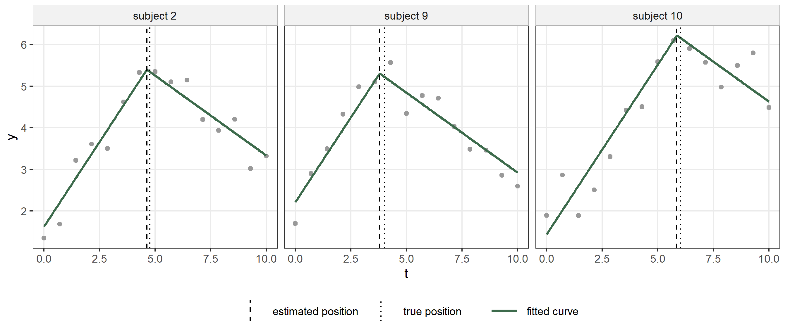
Random effects on the other coefficients
The position is not the only coefficient that can vary between subjects. Each coefficient of the term takes a formula of its own, so the change of slope can have a random effect too: \[ \mu_{ij} = \beta_0 + b_i + \beta_1 t_{ij} + \gamma_i\,(t_{ij} - \psi_i)_+ , \qquad \psi_i = \psi + u_i, \qquad \gamma_i = \gamma + v_i , \] with \(u_i \sim \mathrm{N}(0, \tau_\psi)\) and \(v_i \sim \mathrm{N}(0, \tau_\gamma)\). We simulate a new panel in which the change of slope varies between subjects with standard deviation 0.3, and we fit it:
set.seed(6)
g_i <- -1.2 + rnorm(20, sd = 0.3)
y_g <- b0[id] + 0.8 * t + g_i[id] * pmax(t - psi_i[id], 0) +
rnorm(300, sd = 0.4)
panel_g <- data.frame(id = id, t = t, y = y_g)
fit_pg <- statmod(y ~ random(~ 1 | id) +
seg(t, psi ~ random(~ 1 | id), gamma1 ~ random(~ 1 | id)),
distrib = gaussian1_distrib(), data = panel_g)
summary(fit_pg)
#> A statmod fit
#>
#> Call: statmod(formula = y ~ random(~1 | id) + seg(t, psi ~ random(~1 |
#> id), gamma1 ~ random(~1 | id)), distrib = gaussian1_distrib(),
#> data = panel_g)
#>
#> Distribution: gaussian1 Observations: 300
#>
#> === mu [identity link]
#>
#> Parametric terms
#> estimate se z p lower upper
#> (Intercept) 1.97 0.1125 17.52 < 1e-16 1.749 2.19
#>
#> random(~1 | id) [20 coefficients, edf 17.10]
#> estimate se lower upper
#> sigma [reml] 0.4314 0.0778 0.303 0.6143
#> predicted effects (20 levels of id)
#> Min. 1st Qu. Median Mean 3rd Qu. Max.
#> (Intercept) -0.8499 -0.3268 0.03023 0 0.3137 0.6281
#>
#> seg(t, psi ~ random(~1 | id), gamma1 ~ random(~1 | id)) [43 coefficients, edf 36.52]
#> estimate se z p lower upper
#> beta 0.7926 0.02029 39.07 < 1e-16 0.7529 0.8324
#>
#> gamma1 ~ random(~1 | id)
#> fixed effects
#> (Intercept) -1.158 0.0801 -14.46 < 1e-16 -1.315 -1.001
#> random(~1 | id) [20 coefficients]
#> sigma [reml] 0.3313 0.05789 0.2352 0.4666
#> predicted effects (20 levels of id)
#> Min. 1st Qu. Median Mean 3rd Qu. Max.
#> (Intercept) -0.4707 -0.1583 -0.06662 0 0.1483 0.6116
#>
#> psi1 ~ random(~1 | id)
#> fixed effects
#> (Intercept) 5.017 0.1817 27.61 < 1e-16 4.661 5.373
#> random(~1 | id) [20 coefficients]
#> sigma [reml] 0.7143 0.1406 0.4857 1.05
#> predicted effects (20 levels of id)
#> Min. 1st Qu. Median Mean 3rd Qu. Max.
#> (Intercept) -0.9463 -0.399 -0.007474 0 0.2915 1.427
#>
#> === sigma [log link]
#>
#> Parametric terms
#> estimate se z p lower upper
#> (Intercept) -0.92 0.04575 -20.11 < 1e-16 -1.01 -0.8304
#>
#> 95% intervals, bayesian variance
#> conditional log-likelihood -122.515772 effective df 55.62
#> cAIC 356.272 cBIC 562.276
#> fitted in 7.17 s
#> inner max |grad|/se 4.1e-08 min eigen 0.0092
#> outer max |grad|/se 0.021 min eigen 0.91
#> 1 note: print(summary(fit), notes = TRUE)The block of the term now has two compartments, one for psi1 and one for gamma1. Each gives the fixed effect of its formula and then the standard deviation of its random effects. Every random() term has its own variance, so \(\tau_\psi\) and \(\tau_\gamma\) are estimated separately, by REML, together with the standard deviation of the random intercept.
To give two random effects the same variance we write the same label in the argument id of the two random() terms. Here this means \(\tau_\psi = \tau_\gamma\):
fit_pg_id <- statmod(y ~ random(~ 1 | id) +
seg(t, psi ~ random(~ 1 | id, id = "re"),
gamma1 ~ random(~ 1 | id, id = "re")),
distrib = gaussian1_distrib(), data = panel_g)
summary(fit_pg_id)
#> A statmod fit
#>
#> Call: statmod(formula = y ~ random(~1 | id) + seg(t, psi ~ random(~1 |
#> id, id = "re"), gamma1 ~ random(~1 | id, id = "re")), distrib = gaussian1_distrib(),
#> data = panel_g)
#>
#> Distribution: gaussian1 Observations: 300
#>
#> === mu [identity link]
#>
#> Parametric terms
#> estimate se z p lower upper
#> (Intercept) 1.969 0.1131 17.41 < 1e-16 1.747 2.191
#>
#> random(~1 | id) [20 coefficients, edf 17.12]
#> estimate se lower upper
#> sigma [reml] 0.4321 0.07764 0.3038 0.6145
#> predicted effects (20 levels of id)
#> Min. 1st Qu. Median Mean 3rd Qu. Max.
#> (Intercept) -0.8998 -0.3294 0.01591 0 0.3121 0.6091
#>
#> seg(t, psi ~ random(~1 | id, id = "re"), gamma1 ~ random(~1 | id, id = "re")) [43 coefficients, edf 35.16]
#> estimate se z p lower upper
#> beta 0.791 0.02073 38.17 < 1e-16 0.7504 0.8316
#>
#> gamma1 ~ random(~1 | id, id = "re")
#> fixed effects
#> (Intercept) -1.153 0.1164 -9.91 < 1e-16 -1.381 -0.9252
#> random(~1 | id, id = "re") [20 coefficients]
#> sigma [reml] 0.5022 0.07569 0.3738 0.6748
#> predicted effects (20 levels of id)
#> Min. 1st Qu. Median Mean 3rd Qu. Max.
#> (Intercept) -0.4632 -0.1733 -0.054 0 0.1582 0.6563
#>
#> psi1 ~ random(~1 | id, id = "re")
#> fixed effects
#> (Intercept) 5.02 0.1414 35.5 < 1e-16 4.743 5.297
#> random(~1 | id, id = "re") [20 coefficients]
#> sigma [reml] 0.5022
#> predicted effects (20 levels of id)
#> Min. 1st Qu. Median Mean 3rd Qu. Max.
#> (Intercept) -0.8547 -0.3415 -0.006559 0 0.2458 1.236
#>
#> === sigma [log link]
#>
#> Parametric terms
#> estimate se z p lower upper
#> (Intercept) -0.9103 0.0461 -19.74 < 1e-16 -1.001 -0.8199
#>
#> 95% intervals, bayesian variance
#> conditional log-likelihood -125.900601 effective df 54.28
#> cAIC 360.365 cBIC 561.412
#> fitted in 7.53 s
#> inner max |grad|/se 8.8e-08 min eigen 0.0043
#> outer max |grad|/se 0.0015 min eigen 0.86
#> 1 note: print(summary(fit), notes = TRUE)
hyper(fit_pg_id)
#> parameter
#> 1 mu
#> 2 mu
#> 3 mu
#> term
#> 1 random(~1 | id)
#> 2 seg(t, psi ~ random(~1 | id, id = "re"), gamma1 ~ random(~1 | id, id = "re"))::gamma1::random(~1 | id, id = "re")
#> 3 seg(t, psi ~ random(~1 | id, id = "re"), gamma1 ~ random(~1 | id, id = "re"))::psi1::random(~1 | id, id = "re")
#> name estimate held source id
#> 1 sigma 0.4320553 FALSE reml <NA>
#> 2 sigma 0.5022088 FALSE reml re
#> 3 sigma 0.5022088 FALSE reml reThe two models differ by one variance parameter, and we compare them with the likelihood ratio of their REML criteria:
l0 <- logLik(fit_pg_id, type = "marginal")
l1 <- logLik(fit_pg, type = "marginal")
lr_g <- 2 * (as.numeric(l1) - as.numeric(l0))
lr_g
#> [1] 9.002473
pchisq(lr_g, df = 1, lower.tail = FALSE)
#> [1] 0.002696145The common variance is rejected. This is what we expect, because the two standard deviations are in different units: \(\tau_\psi\) is a length of time and \(\tau_\gamma\) a change of slope, so they are equal only by accident. A common variance is natural when the coefficients are on the same scale, for example the changes of level of two break-points, delta1 and delta2. The hypothesis \(\tau_\psi = \tau_\gamma\) does not put either standard deviation at zero, so the usual \(\chi^2_1\) reference applies. Figure 11.13 shows three subjects with the curves of the model with two separate variances.
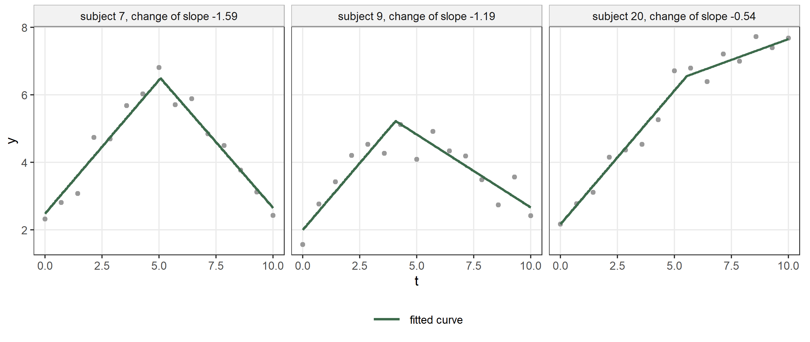
Heavy-tailed random positions
The random effects need not be gaussian. The argument distrib of random() takes any distribution of distributions7 with location zero, and a Student \(t\) gives positions whose distribution has heavier tails, so that a few subjects whose break-point lies far from the others do not inflate the spread of all the rest. We move the break-points of two subjects of the first panel to 1.5 and 8.8, and fit the model with gaussian random positions and with \(t\) random positions whose degrees of freedom are estimated with the scale:
psi_o <- psi_i
psi_o[c(4, 17)] <- c(1.5, 8.8)
set.seed(7)
y_o <- b0[id] + 0.8 * t - 1.2 * pmax(t - psi_o[id], 0) + rnorm(300, sd = 0.4)
panel_o <- data.frame(id = id, t = t, y = y_o)
fit_og <- statmod(y ~ random(~ 1 | id) + seg(t, psi ~ random(~ 1 | id)),
distrib = gaussian1_distrib(), data = panel_o)
t_prior <- fixed(student_t1_distrib(), mu = 0)
fit_ot <- statmod(y ~ random(~ 1 | id) +
seg(t, psi ~ random(~ 1 | id, distrib = t_prior)),
distrib = gaussian1_distrib(), data = panel_o)
summary(fit_ot)
#> A statmod fit
#>
#> Call: statmod(formula = y ~ random(~1 | id) + seg(t, psi ~ random(~1 |
#> id, distrib = t_prior)), distrib = gaussian1_distrib(), data = panel_o)
#>
#> Distribution: gaussian1 Observations: 300
#>
#> === mu [identity link]
#>
#> Parametric terms
#> estimate se z p lower upper
#> (Intercept) 2.086 0.1061 19.65 < 1e-16 1.878 2.294
#>
#> random(~1 | id) [20 coefficients, edf 16.86]
#> estimate se lower upper
#> sigma [reml] 0.406 0.07536 0.2822 0.5841
#> predicted effects (20 levels of id)
#> Min. 1st Qu. Median Mean 3rd Qu. Max.
#> (Intercept) -0.5638 -0.3237 -0.03039 0 0.3739 0.6156
#>
#> seg(t, psi ~ random(~1 | id, distrib = t_prior)) [23 coefficients, edf 19.84]
#> estimate se z p lower upper
#> beta 0.7959 0.01891 42.09 < 1e-16 0.7588 0.8329
#> gamma1 -1.226 0.02642 -46.39 < 1e-16 -1.277 -1.174
#>
#> psi1 ~ random(~1 | id, distrib = t_prior)
#> fixed effects
#> (Intercept) 4.927 0.1167 42.22 < 1e-16 4.698 5.155
#> random(~1 | id, distrib = t_prior) [20 coefficients]
#> sigma [reml] 0.3443 0.157 0.1408 0.8417
#> nu [reml] 1.195 0.5776 0.4632 3.082
#> predicted effects (20 levels of id)
#> Min. 1st Qu. Median Mean 3rd Qu. Max.
#> (Intercept) -3.574 -0.1187 -0.01763 0.08438 0.2386 3.934
#>
#> === sigma [log link]
#>
#> Parametric terms
#> estimate se z p lower upper
#> (Intercept) -0.9517 0.04389 -21.69 < 1e-16 -1.038 -0.8657
#>
#> 95% intervals, bayesian variance
#> conditional log-likelihood -121.592426 effective df 38.70
#> cAIC 320.581 cBIC 463.910
#> fitted in 2.89 s
#> inner max |grad|/se 1.3e-09 min eigen 0.022
#> outer max |grad|/se 8.1e-05 min eigen 0.33
#> 1 note: print(summary(fit), notes = TRUE)psi_of <- function(fit) {
cf <- coef(fit)$mu
cf[["seg.psi1.(Intercept)"]] + cf[paste0("seg.psi1.random.", 1:20)]
}
h_og <- hyper(fit_og)
h_ot <- hyper(fit_ot)
rbind(gaussian = c(scale = h_og$estimate[h_og$name == "sigma" &
grepl("seg", h_og$term)],
rmse = sqrt(mean((psi_of(fit_og) - psi_o)^2)),
rmse_others = sqrt(mean((psi_of(fit_og) - psi_o)[-c(4, 17)]^2))),
t = c(scale = h_ot$estimate[h_ot$name == "sigma" &
grepl("seg", h_ot$term)],
rmse = sqrt(mean((psi_of(fit_ot) - psi_o)^2)),
rmse_others = sqrt(mean((psi_of(fit_ot) - psi_o)[-c(4, 17)]^2))))
#> scale rmse rmse_others
#> gaussian 1.3094988 0.2190268 0.2306735
#> t 0.3442866 0.2312986 0.2409173The compartment of psi1 now reports the two parameters of the \(t\) distribution under its random part, the scale and the degrees of freedom. The degrees of freedom are estimated at 1.19, which gives tails about as heavy as those of a Cauchy distribution. The gaussian model inflates its standard deviation to 1.31 to cover the two distant subjects, while the scale of the \(t\), 0.34, describes the spread of the other eighteen. The positions of the subjects are estimated about equally well by the two models, overall and for the eighteen subjects that were not moved.
11.6 Smoothed break-points
A change of level has no derivative in its position, and so no standard error. One way to obtain one replaces the step by a smooth function that rises from 0 to 1 over a small width around the position. The construction starts from two identities. With \(u = x - \psi\), \[
(u)_+ = \frac{u + \lvert u\rvert}{2}, \qquad
\mathbb{1}(u > 0) = \frac{1 + \operatorname{sgn} u}{2}
= \frac{1}{2}\Big(1 + \frac{d\lvert u\rvert}{du}\Big) \quad (u \ne 0),
\] so the truncated line and the step are algebraic sums of \(u\), of the absolute value \(\lvert u\rvert\) and of its derivative. The absolute value is the one non-smooth ingredient. Replacing it by a smooth function \(s_h(u)\) with \(s_h(u) \to \lvert u\rvert\) as \(h \to 0\) gives \[
(u)_+ \approx \frac{u + s_h(u)}{2}, \qquad
\mathbb{1}(u > 0) \approx \frac{1 + s_h'(u)}{2},
\] a smoothed truncated line and a smoothed step. Their derivatives in \(\psi\) are \(-\{1 + s_h'(u)\}/2\) and \(-s_h''(u)/2\), and the second is not zero near the position, so the likelihood has a curvature in \(\psi\) and \(\psi\) has a standard error. The argument smoothed of jump() and jseg() chooses the function, and statmodels7 has three of them:
smooth_probit(h)takes \(s_h(u) = \mathbb{E}\lvert u + hZ\rvert = u\{2\Phi(u/h) - 1\} + 2h\,\phi(u/h)\) with \(Z\) standard normal, whose derivative is \(2\Phi(u/h) - 1\), so the step is the gaussian distribution function \(\Phi(u/h)\). It differs from the sharp step only within a few widths of \(\psi\), because the difference has gaussian tails.smooth_quintic(h)uses a polynomial on \([-h, h]\), equal to \(\lvert u\rvert\) outside it, so the step is 0 below \(\psi - h\) and 1 above \(\psi + h\) exactly. Outside that window the model is the sharp model.smooth_hyperbolic(c)takes \(s_h(u) = \sqrt{u^2 + c}\), so the step is \(\{1 + u/\sqrt{u^2 + c}\}/2\). It is the simplest of the three, but it approaches 0 and 1 only as \(1/u^2\), so it moves the fitted mean far from \(\psi\) as well.
We fit the three smoothed steps to the Nile with their default widths:
fit_np <- statmod(flow ~ jump(year, smoothed = smooth_probit()),
distrib = gaussian1_distrib(), data = nile)
summary(fit_np)
#> A statmod fit
#>
#> Call: statmod(formula = flow ~ jump(year, smoothed = smooth_probit()),
#> distrib = gaussian1_distrib(), data = nile)
#>
#> Distribution: gaussian1 Observations: 100
#>
#> === mu [identity link]
#>
#> Parametric terms
#> estimate se z p lower upper
#> (Intercept) 1100 25.21 43.64 < 1e-16 1051 1150
#>
#> jump(year, smoothed = smooth_probit()) [2 coefficients, edf 2.00]
#> estimate se z p lower upper
#> delta1 -250.2 29.41 -8.505 < 1e-16 -307.8 -192.5
#> psi1 1898 0.9943 1896 1900
#>
#> === sigma [log link]
#>
#> Parametric terms
#> estimate se z p lower upper
#> (Intercept) 4.861 0.0718 67.7 < 1e-16 4.72 5.002
#>
#> 95% intervals, bayesian variance
#> conditional log-likelihood -626.476475 effective df 4.00
#> cAIC 1260.953 cBIC 1271.374
#> fitted in 280 ms
#> inner max |grad|/se 4.3e-06 min eigen 0.14
#> outer max |grad|/se 3e-08 min eigen 1
#> 1 note: print(summary(fit), notes = TRUE)
fit_nq <- statmod(flow ~ jump(year, smoothed = smooth_quintic()),
distrib = gaussian1_distrib(), data = nile)
summary(fit_nq)
#> A statmod fit
#>
#> Call: statmod(formula = flow ~ jump(year, smoothed = smooth_quintic()),
#> distrib = gaussian1_distrib(), data = nile)
#>
#> Distribution: gaussian1 Observations: 100
#>
#> === mu [identity link]
#>
#> Parametric terms
#> estimate se z p lower upper
#> (Intercept) 1100 25.56 43.05 < 1e-16 1050 1151
#>
#> jump(year, smoothed = smooth_quintic()) [2 coefficients, edf 2.00]
#> estimate se z p lower upper
#> delta1 -250.5 29.72 -8.428 < 1e-16 -308.8 -192.2
#> psi1 1898 1.201 1896 1901
#>
#> === sigma [log link]
#>
#> Parametric terms
#> estimate se z p lower upper
#> (Intercept) 4.864 0.0718 67.74 < 1e-16 4.723 5.005
#>
#> 95% intervals, bayesian variance
#> conditional log-likelihood -626.773965 effective df 4.00
#> cAIC 1261.548 cBIC 1271.969
#> fitted in 260 ms
#> inner max |grad|/se 2.2e-05 min eigen 0.14
#> outer max |grad|/se 2.9e-08 min eigen 1
#> 1 note: print(summary(fit), notes = TRUE)
fit_nh <- statmod(flow ~ jump(year, smoothed = smooth_hyperbolic()),
distrib = gaussian1_distrib(), data = nile)
summary(fit_nh)
#> A statmod fit
#>
#> Call: statmod(formula = flow ~ jump(year, smoothed = smooth_hyperbolic()),
#> distrib = gaussian1_distrib(), data = nile)
#>
#> Distribution: gaussian1 Observations: 100
#>
#> === mu [identity link]
#>
#> Parametric terms
#> estimate se z p lower upper
#> (Intercept) 1100 25.27 43.55 < 1e-16 1051 1150
#>
#> jump(year, smoothed = smooth_hyperbolic()) [2 coefficients, edf 2.00]
#> estimate se z p lower upper
#> delta1 -250.8 29.55 -8.486 < 1e-16 -308.7 -192.9
#> psi1 1898 0.9875 1896 1900
#>
#> === sigma [log link]
#>
#> Parametric terms
#> estimate se z p lower upper
#> (Intercept) 4.862 0.07179 67.72 < 1e-16 4.721 5.002
#>
#> 95% intervals, bayesian variance
#> conditional log-likelihood -626.563735 effective df 4.00
#> cAIC 1261.127 cBIC 1271.548
#> fitted in 190 ms
#> inner max |grad|/se 2.2e-05 min eigen 0.14
#> outer max |grad|/se 0.00062 min eigen 1
#> 1 note: print(summary(fit), notes = TRUE)We put the estimates of the sharp step of Section 11.2 beside those of the three smoothed models, with their log-likelihoods:
ci_n <- confint(fit_nile)
ci_np <- confint(fit_np)
ci_nq <- confint(fit_nq)
ci_nh <- confint(fit_nh)
est <- cbind(sharp = ci_n$estimate, probit = ci_np$estimate,
quintic = ci_nq$estimate, hyperbolic = ci_nh$estimate)
se <- cbind(sharp = ci_n$se, probit = ci_np$se, quintic = ci_nq$se,
hyperbolic = ci_nh$se)
rownames(est) <- rownames(ci_n)
rownames(se) <- rownames(ci_n)
round(est, 2)
#> sharp probit quintic hyperbolic
#> mu:(Intercept) 1097.75 1100.23 1100.43 1100.37
#> mu:jump.delta1 -247.78 -250.16 -250.50 -250.81
#> mu:jump.psi1 1898.08 1898.19 1898.21 1898.32
#> sigma:(Intercept) 4.85 4.86 4.86 4.86
round(se, 2)
#> sharp probit quintic hyperbolic
#> mu:(Intercept) 24.13 25.21 25.56 25.27
#> mu:jump.delta1 28.44 29.41 29.72 29.55
#> mu:jump.psi1 NA 0.99 1.20 0.99
#> sigma:(Intercept) 0.07 0.07 0.07 0.07
c(sharp = logLik(fit_nile), probit = logLik(fit_np), quintic = logLik(fit_nq),
hyperbolic = logLik(fit_nh))
#> sharp probit quintic hyperbolic
#> -625.8417 -626.4765 -626.7740 -626.5637The three smoothed models put the step at 1898.19, 1898.21 and 1898.32, with standard errors of 0.99, 1.20 and 0.99 years. The sharp step sits in the same interval, between 1898 and 1899, and has no standard error. The levels and the drop change by a few units, and their standard errors are a little larger in the smoothed models, which add the uncertainty of the position. The log-likelihood of the sharp step is the highest, and the smoothed ones are lower by less than one unit: the smoothed mean moves from one level to the other over a year or two, and with yearly data this is almost the same model. Figure 11.14 shows the four fitted means around the break-point.
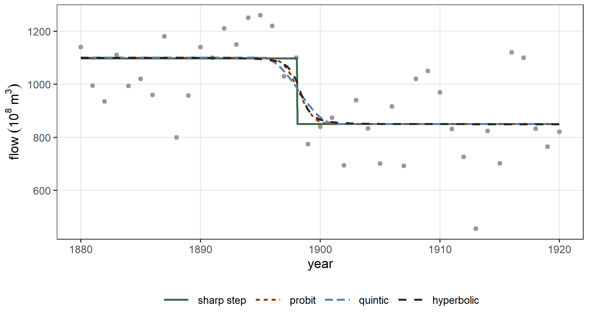
The width of the smoothing
The width \(h\) is a constant of the model, chosen before the fit and not estimated. When it is not given, it is computed from the spacing of the covariate: \(h\) is the spacing for the probit, 3.61 times the spacing for the quintic, so that about five observations fall inside \([-h, h]\), and \(c\) is the square of the spacing for the hyperbolic. The choice matters because the standard error of \(\psi\) belongs to the smoothed model at that width. We fit the probit step to the Nile with widths from a tenth of a year to eight years:
widths <- c(0.1, 0.25, 0.5, 1, 2, 4, 8)
tab_h <- t(vapply(widths, function(h) {
f <- statmod(flow ~ jump(year, smoothed = smooth_probit(h)),
distrib = gaussian1_distrib(), data = nile)
ci <- confint(f)
c(h = h, psi = ci["mu:jump.psi1", "estimate"], se_psi = ci["mu:jump.psi1", "se"],
delta = ci["mu:jump.delta1", "estimate"], se_delta = ci["mu:jump.delta1", "se"],
logLik = as.numeric(logLik(f)),
converged = statmod_certificate(f)$state == "converged")
}, numeric(7)))
round(tab_h, 3)
#> h psi se_psi delta se_delta logLik converged
#> [1,] 0.10 1898.465 5979.059 -247.778 26.482 -626.406 0
#> [2,] 0.25 1898.399 1.155 -248.221 28.898 -625.871 1
#> [3,] 0.50 1898.360 0.738 -249.065 28.984 -626.102 1
#> [4,] 1.00 1898.191 0.994 -250.156 29.412 -626.476 1
#> [5,] 2.00 1898.366 1.452 -250.377 30.204 -627.346 1
#> [6,] 4.00 1898.847 2.219 -249.018 31.992 -629.421 1
#> [7,] 8.00 1898.476 3.551 -257.520 36.758 -631.773 1As \(h\) decreases the smoothed model approaches the sharp step and its log-likelihood rises towards that of the sharp step, so the likelihood cannot choose \(h\): it would always choose the sharp step. The curvature in \(\psi\) comes from the observations within a few widths of \(\psi\). With \(h = 0.1\) there is hardly any observation there, the curvature is close to zero, the fit does not converge and the standard error of \(\psi\) is meaningless. From \(h = 0.5\) on, the transition from one level to the other spreads over more years as \(h\) grows, the fit gets worse, and the standard error of \(\psi\) grows with \(h\), from less than a year to several years. A width close to the spacing of the covariate is the smallest one that gives every position a curvature from a few observations, and it keeps the model close to the sharp step; this is the default.
With random positions the width also changes the variance of the positions. On the panel of Section 11.7, which has a change of level, the estimated standard deviation of the positions grows with \(h\), and the change of level is estimated too large when the width is wide:
#> h position sd_position delta
#> [1,] 0.25 4.804 0.651 1.456
#> [2,] 0.71 4.909 0.776 1.527
#> [3,] 2.00 4.741 0.988 1.782The positions were drawn with a standard deviation of 0.8 (the sample standard deviation of the twenty positions is 0.63) and the change of level is 1.5. The width 0.71 is the default, the spacing of the times.
Which smoother to use
On the Nile the three smoothers give almost the same fit, because the width is about one year and the series has one observation a year. They differ in three properties, and these decide the choice.
- How far from \(\psi\) the fit is changed. The probit step differs from the sharp step by a gaussian tail, so a few widths away from \(\psi\) the two agree to rounding. The quintic step equals the sharp step exactly outside \([\psi - h, \psi + h]\). The hyperbolic step differs from the sharp step by a term that decays only as \(c/u^2\), so it moves the fitted mean at every observation, also far from the break-point.
- Whether \(\psi\) always has a curvature. The curvature in \(\psi\) comes from observations inside the window of the smoother. The probit and the hyperbolic windows never end, so every observation contributes a little. The quintic window ends at \(\pm h\), and if no observation falls inside it, \(\psi\) has no curvature and is not identified; this is why its default width is wider, 3.61 spacings, which puts about five observations inside the window of a uniform covariate.
- Whether a criterion over the hyperparameters is smooth. The probit is an analytic function, so a REML criterion with a smoothed break-point, for example the standard deviation of random positions, has exact derivatives everywhere. The quintic has a fourth derivative that jumps at \(\pm h\), and the criterion has small jumps in its gradient whenever an observation crosses \(\psi \pm h\).
So smooth_probit() is the default to use: it changes the model only near \(\psi\), it always gives \(\psi\) a curvature, and it keeps the REML criterion smooth. Use smooth_quintic() when the model should be the sharp model away from the break-point, for example when the observations near \(\psi\) are few and the fit elsewhere must not change, and there is no hyperparameter to estimate by REML. smooth_hyperbolic() is the simplest form and has the cheapest derivatives, but it changes the fit everywhere; it is rarely the right choice for a break-point.
11.7 The marginal likelihood of a random break-point
The random positions of Section 11.5 are estimated as penalized coefficients, one for each subject, and \(\tau\) comes from the Laplace approximation of REML. For a change of level this is not available, because the indicator gives the log-likelihood no curvature in \(\psi_i\). The argument marginal = TRUE integrates each subject’s position out of the likelihood instead: \[
L_i = \int \prod_j p\{y_{ij} \mid \mu_{ij}(\psi_i)\}\,
\frac{1}{\tau}\phi\!\left(\frac{\psi_i - m}{\tau}\right) d\psi_i .
\] For jump() the integrand is constant between consecutive times, so the integral is a finite sum over the intervals, each weighted by the normal probability of the interval. For seg() and jseg() it is computed by quadrature. The term then has the parameters \(m\), \(\tau\) and \(\delta\) of the population, and no coefficient per subject. The panel with a change of level of the previous section, with \(\psi_i\) drawn from \(\mathrm{N}(5, 0.8)\) and \(\delta = 1.5\), is fitted with:
fit_marg <- statmod(y ~ random(~ 1 | id) +
jump(t, psi ~ random(~ 1 | id), marginal = TRUE),
distrib = gaussian1_distrib(), data = panel_j)
summary(fit_marg)
#> A statmod fit
#>
#> Call: statmod(formula = y ~ random(~1 | id) + jump(t, psi ~ random(~1 |
#> id), marginal = TRUE), distrib = gaussian1_distrib(), data = panel_j)
#>
#> Distribution: gaussian1 Observations: 300
#>
#> === mu [identity link]
#>
#> Parametric terms
#> estimate se z p lower upper
#> (Intercept) 2.061 0.1013 20.34 < 1e-16 1.863 2.26
#>
#> random(~1 | id) [20 coefficients, edf 18.11]
#> estimate se lower upper
#> sigma [reml] 0.4313 0.07374 0.3085 0.603
#> predicted effects (20 levels of id)
#> Min. 1st Qu. Median Mean 3rd Qu. Max.
#> (Intercept) -0.8211 -0.24 0.03437 0 0.3531 0.5753
#>
#> jump(t, psi ~ random(~1 | id), marginal = TRUE) [3 parameters, edf 3.00]
#> estimate se lower upper
#> psi1.mean 4.942 0.1667 4.615 5.268
#> psi1.sd 0.7 0.1303 0.4861 1.008
#> delta1 1.429 0.04342 1.344 1.514
#>
#> === sigma [log link]
#>
#> Parametric terms
#> estimate se z p lower upper
#> (Intercept) -0.9905 0.04152 -23.85 < 1e-16 -1.072 -0.9091
#>
#> 95% intervals, bayesian variance
#> conditional log-likelihood -155.102161 effective df 23.11
#> cAIC 356.414 cBIC 441.990
#> fitted in 17 s
#> inner max |grad|/se 5.7e-05 min eigen 0.024
#> outer max |grad|/se 0.00037 min eigen 1
#> 1 note: print(summary(fit), notes = TRUE)
statmod_certificate(fit_marg)
#> $state
#> [1] "converged"
#>
#> $decrement
#> [1] 6.779208e-08
#>
#> $gradient
#> [1] 0.00215162
#>
#> $mode_error
#> [1] 1.665652e-09
#>
#> $curvature
#> [1] "differenced criterion"
#>
#> $boundary
#> character(0)
#>
#> $boundary_key
#> character(0)
#>
#> $ridge
#> list()
#>
#> $reason
#> character(0)
#>
#> $inner
#> gradient eigen
#> 5.724384e-05 2.383604e-02
#>
#> $outer
#> gradient eigen
#> 0.0003682175 1.0000000000The block of the term has three parameters, and they are the parameters of the population of positions, not of any one subject. The positions of the subjects follow \(\psi_i \sim \mathrm{N}(m, \tau)\), and:
psi1.meanis \(m\), the mean of the positions in the population. It is the population position, the same quantity aspsi1.(Intercept)in the model with a random position of Section 11.5;psi1.sdis \(\tau\), the standard deviation of the positions between subjects, the same quantity as thesigmaof the random part of that model;delta1is \(\delta\), the change of level, common to all subjects.
The number 1 refers to the first break-point; with npsi = 2 the block also has psi2.mean and psi2.sd. The summary has no row for the position of each subject, because the model has no coefficient for it: each \(\psi_i\) has been integrated out of the likelihood. What the data say about the position of subject \(i\) is its posterior distribution given that subject’s observations and the fitted \(m\), \(\tau\), \(\delta\) and \(\sigma\). The function statmod_latent() returns its mean and standard deviation, one row per subject and break-point: the column group names the subject, psi says which break-point the row is about (here always the first), and mean and sd are the posterior mean and standard deviation of that subject’s position:
lat <- statmod_latent(fit_marg)
head(lat)
#> group psi mean sd
#> 1 1 1 4.512195 0.3559540
#> 2 2 1 4.667797 0.2017927
#> 3 3 1 5.306726 0.2262820
#> 4 4 1 4.023548 0.2134408
#> 5 5 1 5.314553 0.2134005
#> 6 6 1 5.331141 0.2147030
psi_post <- lat$mean[match(levels(panel_j$id), as.character(lat$group))]
cbind(posterior_mean = psi_post, true = psi_i)[1:6, ]
#> posterior_mean true
#> [1,] 4.512195 4.230453
#> [2,] 4.667797 4.765979
#> [3,] 5.306726 5.207031
#> [4,] 4.023548 4.078294
#> [5,] 5.314553 5.156626
#> [6,] 5.331141 5.024099
cor(psi_post, psi_i)
#> [1] 0.9661882The posterior mean of \(\psi_i\) is a weighted average of the intervals between consecutive times, each interval weighted by how well a step there fits the observations of subject \(i\) and by its probability under \(\mathrm{N}(m, \tau)\). A subject whose step is clear in the data has a small posterior standard deviation; a subject whose step is hidden by noise has a posterior mean pulled towards \(m\) and a larger standard deviation.
The fitted values of the marginal model are the posterior means of the predictor at the observed times: for subject \(i\) at time \(t_{ij}\), \[ \mathbb{E}(\mu_{ij} \mid y_i) = \beta_0 + b_i + \delta\, P(\psi_i < t_{ij} \mid y_i), \] which rises from one level to the other over the times where the posterior of \(\psi_i\) has its mass. Figure 11.15 shows six subjects with their observations, these fitted values, and the posterior mean and standard deviation of their positions.
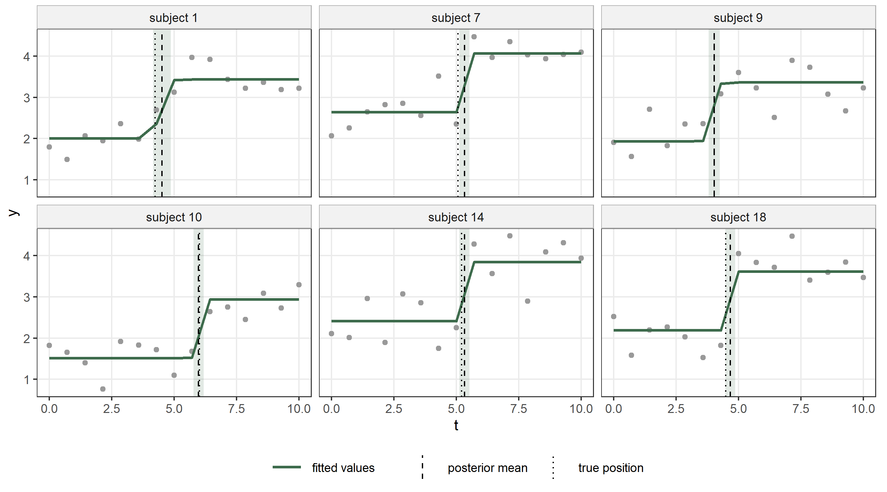
The smoothed step of Section 11.6 gives the other route: with smoothed = smooth_probit() the positions of the subjects are penalized coefficients again, as for seg() in Section 11.5.
fit_srand <- statmod(y ~ random(~ 1 | id) +
jump(t, psi ~ random(~ 1 | id),
smoothed = smooth_probit()),
distrib = gaussian1_distrib(), data = panel_j)
summary(fit_srand)
#> A statmod fit
#>
#> Call: statmod(formula = y ~ random(~1 | id) + jump(t, psi ~ random(~1 |
#> id), smoothed = smooth_probit()), distrib = gaussian1_distrib(),
#> data = panel_j)
#>
#> Distribution: gaussian1 Observations: 300
#>
#> === mu [identity link]
#>
#> Parametric terms
#> estimate se z p lower upper
#> (Intercept) 2.007 0.1015 19.77 < 1e-16 1.808 2.206
#>
#> random(~1 | id) [20 coefficients, edf 17.55]
#> estimate se lower upper
#> sigma [reml] 0.4195 0.07355 0.2975 0.5916
#> predicted effects (20 levels of id)
#> Min. 1st Qu. Median Mean 3rd Qu. Max.
#> (Intercept) -0.7567 -0.2525 0.03495 0 0.3174 0.5335
#>
#> jump(t, psi ~ random(~1 | id), smoothed = smooth_probit()) [22 coefficients, edf 16.72]
#> estimate se z p lower upper
#> delta1 1.527 0.05303 28.8 < 1e-16 1.423 1.631
#>
#> psi1 ~ random(~1 | id)
#> fixed effects
#> (Intercept) 4.908 0.1974 24.86 < 1e-16 4.521 5.295
#> random(~1 | id) [20 coefficients]
#> sigma [reml] 0.7756 0.1564 0.5224 1.152
#> predicted effects (20 levels of id)
#> Min. 1st Qu. Median Mean 3rd Qu. Max.
#> (Intercept) -1.181 -0.4274 0.08712 0 0.4639 1.146
#>
#> === sigma [log link]
#>
#> Parametric terms
#> estimate se z p lower upper
#> (Intercept) -0.8706 0.04372 -19.91 < 1e-16 -0.9563 -0.7849
#>
#> 95% intervals, bayesian variance
#> conditional log-likelihood -146.784874 effective df 36.28
#> cAIC 366.125 cBIC 500.490
#> fitted in 2.27 s
#> inner max |grad|/se 1.1e-05 min eigen 0.031
#> outer max |grad|/se 6.6e-06 min eigen 0.96
#> 3 notes: print(summary(fit), notes = TRUE)
cf_sr <- coef(fit_srand)$mu
h_sr <- hyper(fit_srand)
cf_mg <- coef(fit_marg)$mu
cbind(marginal = c(position = cf_mg[["jump.psi1.mean"]], sd = cf_mg[["jump.psi1.sd"]],
delta = cf_mg[["jump.delta1"]]),
smoothed = c(position = cf_sr[["jump.psi1.(Intercept)"]],
sd = h_sr$estimate[grepl("jump", h_sr$term)],
delta = cf_sr[["jump.delta1"]]),
true = c(5, 0.8, 1.5))
#> marginal smoothed true
#> position 4.9415119 4.9081577 5.0
#> sd 0.7000423 0.7755819 0.8
#> delta 1.4292626 1.5270474 1.5The population position is 4.94, the standard deviation of the positions 0.70 and the change of level 1.43. The criterion of this model has no exact derivative in the standard deviation of the random intercept. statmod() therefore searches over that one hyperparameter with Brent’s method, and statmod_certificate() reads the gradient and the curvature of the criterion by refitting the model at nearby values, which gives the curvature reported above.
The two routes give similar estimates. The standard deviation of the smoothed model is larger, because the smoothing spreads each step over a width \(h\), and a step spread in this way looks like extra variation in the positions (Section 11.6 measured how this grows with \(h\)). The marginal fit costs more: the integral is computed for every subject at every evaluation. Figure 11.16 shows the mean of the responses at each time with the population mean of the marginal model, \(\beta_0 + \delta\,\Phi\{(t - m)/\tau\}\), and the average of the subject curves of the smoothed model.
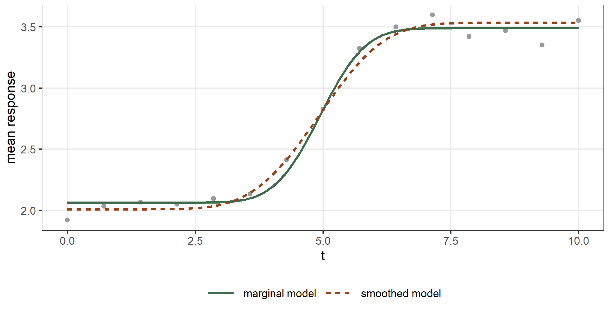
11.8 A break-point in the standard deviation
A break-point term can sit in the equation of \(\sigma\). The data frame mcycle gives the acceleration of the head of a crash-test dummy against the time after impact (Silverman 1985). The variance is small before the impact and large after it. We keep a smooth for the mean and try the three break-point terms for \(\log\sigma\):
data(mcycle, package = "MASS")
fit_ss <- statmod(accel ~ s(times, bspline_smooth(k = 20)) | sigma ~ seg(times),
distrib = gaussian1_distrib(), data = mcycle)
summary(fit_ss)
#> A statmod fit
#>
#> Call: statmod(formula = accel ~ s(times, bspline_smooth(k = 20)) |
#> sigma ~ seg(times), distrib = gaussian1_distrib(), data = mcycle)
#>
#> Distribution: gaussian1 Observations: 133
#>
#> === mu [identity link]
#>
#> Parametric terms
#> estimate se z p lower upper
#> (Intercept) -25.26 1.86 -13.58 < 1e-16 -28.9 -21.61
#>
#> s(times, bspline_smooth(k = 20)) [19 coefficients, edf 13.87]
#> estimate se z p lower upper
#> lambda [reml] 7.353e-05 3.081e-05 3.234e-05 0.0001672
#> lin 14.1 1.318 10.7 < 1e-16 11.52 16.69
#>
#> === sigma [log link]
#>
#> Parametric terms
#> estimate se z p lower upper
#> (Intercept) -1.257 0.2924 -4.298 1.726e-05 -1.83 -0.6836
#>
#> seg(times) [3 coefficients, edf 3.00]
#> estimate se z p lower upper
#> beta 0.2544 0.02104 12.09 < 1e-16 0.2132 0.2956
#> gamma1 -0.2791 0.02246 -12.43 < 1e-16 -0.3232 -0.2351
#> psi1 18.83 0.7471 17.36 20.29
#>
#> 95% intervals, bayesian variance
#> conditional log-likelihood -550.464246 effective df 18.87
#> cAIC 1138.678 cBIC 1193.233
#> fitted in 1.07 s
#> inner max |grad|/se 3.4e-06 min eigen 0.0037
#> outer max |grad|/se 1.1e-05 min eigen 1
#> 1 note: print(summary(fit), notes = TRUE)
fit_sj <- statmod(accel ~ s(times, bspline_smooth(k = 20)) | sigma ~ jump(times),
distrib = gaussian1_distrib(), data = mcycle)
summary(fit_sj)
#> A statmod fit
#>
#> Call: statmod(formula = accel ~ s(times, bspline_smooth(k = 20)) |
#> sigma ~ jump(times), distrib = gaussian1_distrib(), data = mcycle)
#>
#> Distribution: gaussian1 Observations: 133
#>
#> === mu [identity link]
#>
#> Parametric terms
#> estimate se z p lower upper
#> (Intercept) -26.02 1.94 -13.41 < 1e-16 -29.82 -22.22
#>
#> s(times, bspline_smooth(k = 20)) [19 coefficients, edf 13.19]
#> estimate se z p lower upper
#> lambda [reml] 8.165e-05 3.484e-05 3.538e-05 0.0001884
#> lin 14.81 1.803 8.215 2.123e-16 11.28 18.35
#>
#> === sigma [log link]
#>
#> Parametric terms
#> estimate se z p lower upper
#> (Intercept) 0.1044 0.2028 0.5148 0.6067 -0.293 0.5018
#>
#> jump(times) [2 coefficients, edf 2.00]
#> estimate se z p lower upper
#> delta1 3.086 0.2142 14.4 < 1e-16 2.666 3.505
#> psi1 11.2
#>
#> 95% intervals, bayesian variance
#> conditional log-likelihood -553.434976 effective df 17.19
#> cAIC 1141.254 cBIC 1190.945
#> fitted in 4.09 s
#> inner max |grad|/se 7.3e-08 min eigen 0.0071
#> outer max |grad|/se 1.2e-08 min eigen 0.053
#> 2 notes: print(summary(fit), notes = TRUE)
fit_sjs <- statmod(accel ~ s(times, bspline_smooth(k = 20)) | sigma ~ jseg(times),
distrib = gaussian1_distrib(), data = mcycle)
summary(fit_sjs)
#> A statmod fit
#>
#> Call: statmod(formula = accel ~ s(times, bspline_smooth(k = 20)) |
#> sigma ~ jseg(times), distrib = gaussian1_distrib(), data = mcycle)
#>
#> Distribution: gaussian1 Observations: 133
#>
#> === mu [identity link]
#>
#> Parametric terms
#> estimate se z p lower upper
#> (Intercept) -24.28 1.863 -13.03 < 1e-16 -27.93 -20.63
#>
#> s(times, bspline_smooth(k = 20)) [19 coefficients, edf 13.76]
#> estimate se z p lower upper
#> lambda [reml] 6.311e-05 2.568e-05 2.843e-05 0.0001401
#> lin 13.41 1.67 8.031 9.651e-16 10.14 16.68
#>
#> === sigma [log link]
#>
#> Parametric terms
#> estimate se z p lower upper
#> (Intercept) -0.5959 0.3566 -1.671 0.09469 -1.295 0.103
#>
#> jseg(times) [4 coefficients, edf 4.00]
#> estimate se z p lower upper
#> beta 0.1529 0.03187 4.796 1.617e-06 0.0904 0.2153
#> gamma1 -0.1572 0.03291 -4.778 1.771e-06 -0.2217 -0.09273
#> delta1 1.641 0.2578 6.367 1.927e-10 1.136 2.146
#> psi1 14.7
#>
#> 95% intervals, bayesian variance
#> conditional log-likelihood -547.350765 effective df 19.76
#> cAIC 1134.218 cBIC 1191.326
#> fitted in 3.63 s
#> inner max |grad|/se 0.00028 min eigen 0.0065
#> outer max |grad|/se 3.8e-05 min eigen 0.0038
#> 2 notes: print(summary(fit), notes = TRUE)
c(seg = AIC(fit_ss), jump = AIC(fit_sj), jseg = AIC(fit_sjs))
#> seg jump jseg
#> 1138.678 1141.254 1134.218The AIC is smallest for jseg(): at 14.7 ms the logarithm of \(\sigma\) jumps by 1.64, and its slope changes from 0.153 to -0.004 per ms. In the equation of \(\sigma\) the residual sum of squares is not the objective, so the positions are located on the working response of that equation and then compared on the REML criterion itself (Section 11.3). The test of Section 11.1 reads the score of the equation of \(\sigma\) in the same way, and it confirms that the standard deviation changes its slope:
statmod_breakpoint_test(fit_ss)
#>
#> Davies' test for a break-point (score process, upper bound)
#>
#> data: seg in the equation of sigma
#> sup S = 20.51, df = 1, p-value = 6.639e-05
#> alternative hypothesis: a change of slope
#> sample estimates:
#> psi
#> 26.17455Figure 11.17 shows the data with the fitted mean and the band of two standard deviations of the jseg() model, and the fitted standard deviation of the three models.
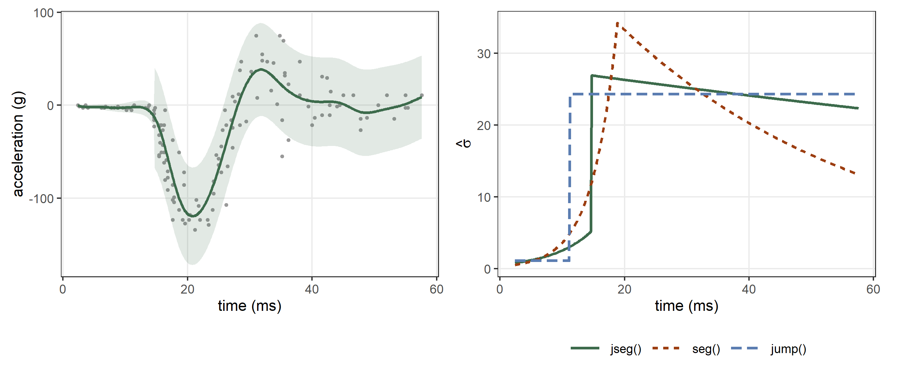